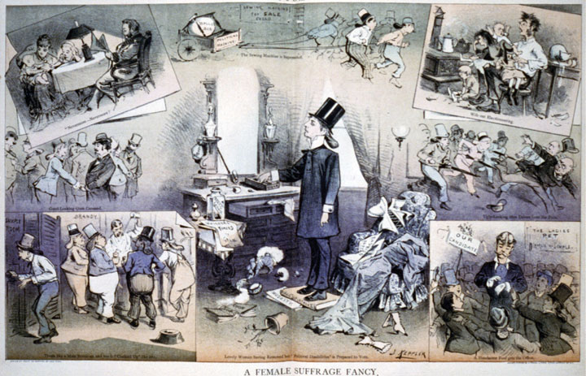

The era of Reconstruction was also a time of Western expansion and industrial growth. For some Americans, issues that continued to divide the nation inspired their Western trek. For others, it was the promise of landownership and economic independence that led them to the West. The Homestead Act of 1862 provided free land to help settlers establish farms. However, not everyone who would have liked to take advantage of the Homestead Act had the resources to move their families, build a home, and establish a farm. For these individuals, the growth of industry provided employment and even the potential for modest upward mobility. Migrants from Europe also hoped to establish farms, many seeking what they hoped would be temporary jobs in the great cities of the East before moving on to the Great Plains of the West. For others, it was the Great Lakes and the clusters of ethnic farm communities that inspired their migration. Immigrants also arrived on the West Coast from Asia and established their communities among Anglo and Hispanic settlers. Old prejudices greeted the new Americans on both coasts and throughout the interior. However, the potential of these immigrants as laborers and customers tempered their reception.
Railroads, coal mines, oil refineries, steel mills, and factories recognized that the success of America’s industrial revolution was dependent on population growth. Massive corporations emerged during the 1870s and 1880s, each creating national networks of production and finance that forever changed their respective industries. Politics also followed the trend of nationalization. Local and state government remained the focal point of US politics. However, the growing importance of national corporations and national transportation networks led many to call on the federal government to perform some of the regulatory functions that had previously been reserved to the states. The federal government continued its tradition of minimal involvement in the economy at this time. However, a growing chorus emerged from factories and farms, demanding intervention on behalf of workers and small farmers.
For those who viewed the millions of acres of Western land as a commodity to be exploited, the cattle drives, homesteads, and railroad grants were ways of accelerating commercial development. These individuals celebrated the tenacity of homesteaders and cowboys, as well as the audacious spirit of western railroad barons and town boosters. Together, these diverse elements gave shape to the most dramatic population shift in US history. From the perspective of Native Americans who already lived in the West and viewed land as a collective resource, the actions of these individuals constituted an attack on their way of life. The view that land was intrinsically valuable irrespective of “improvements,” such as homesteads and railroads, carried little influence in the minds of government and business leaders. As had been the case throughout the nation’s past, Native Americans lacked access to the same level of material resources. As a result, they waged a fighting retreat against federal troops and the millions of predominantly Anglo settlers that migrated west. Theirs was a narrative of both victimization and resistance, both a woeful tale and an inspirational story of courage and free agency against overwhelming odds.
The land so coveted—both by those who were arriving in North America during the 1870s and 1880s and by the descendants of earlier immigrants—was part of an ever-shrinking Permanent Indian Frontier. The frontier stretched from the eastern Great Plains to the edge of the West Coast. These lands had originally been guaranteed to Native American tribes in exchange for their acceptance of their forced exclusion from lands east of the Mississippi River. Before the end of the Civil War, however, some of the original treaties with natives were being “renegotiated” to satisfy the wants of land speculators and fulfill the needs of landless farmers. In addition, little effort was made to coordinate the forced migration of Eastern tribes with those tribes that already occupied the Great Plains. As a result, numerous conflicts placed various tribes in opposition to one another in ways that reduced the likelihood of cooperation and Pan-Indian identity.
The Great Plains region was a melting pot long before settlers of Anglo, Asian, and African descent arrived in large numbers following the Civil War. The northern plains were home to a variety of tribes, many of whom were part of the great Sioux nation and spoke similar languages. The tribes of the central plains migrated throughout the region, while the Five Civilized Tribes of the southeast had been driven to reservations in present-day Oklahoma. Most tribes that were native to the Great Plains maintained migratory lifestyles, while some such as the Pawnee built and maintained lodges. Others such as the Cheyenne and Lakota Sioux had adopted the horse centuries before Anglo settlement and were migratory hunters of bison and other game.
Figure 2.1

An Oglala Sioux standing in front of his home on the Pine Ridge Reservation in South Dakota. This area was home to a diverse number of tribes, many of whom were not originally from the northern Great Plains.
Few Anglos perceived the differences between the various communities and tribal federations throughout the plains. Many also failed to recognize that groups such as the Pawnee and Lakota each contained many independent tribes. The misperception was not simply an accident. Recognition of the diversity and sovereignty of thousands of tribes stood in the way of the federal government’s goal of devising a few treaties that might bind all native peoples to its policy of removal. As a result, the practice of generalizing native life and culture within a given region is tangled within the exploitative practices of the past. While recognizing the liabilities of the task, the historian must still attempt to offer the public a basic overview of life on the plains prior to Western expansion.
Most native societies revolved around communal concepts of life and work that emphasized the tribe as an extended family. Natives constructed their own notions about the separate sphere between male and female roles in society and the family. In general, they established gendered concepts of work with certain tasks being divided among men and women. Many tribes were matrilineal, meaning that men were absorbed into their bride’s extended family network and women were recognized as leaders within the home. Women were deeply respected and in charge of many essential aspects of tribal life, such as farming and the home and hearth. Even in matrilineal societies, tribal leadership of religious and political activities was usually dominated by men. One exception was that women often held a prominent role in diplomacy, which was viewed as an extension of kinship.
Tradition, cooperation, and conflict typified native political life and determined the area a particular tribe inhabited. As a result, the idea of legal ownership of the land itself remained a foreign concept to most tribes. At the same time, natives adopted their own notions of land as property when the territories guaranteed to them by agreements with other tribes of treaties with the federal government were in danger. Violence between various groups of Native Americans was not uncommon and opportunities for conflict between tribes increased as more groups were forced westward. The result of each tribal removal led to conflicts between the new arrivals and Native Americans in the West regarding an ever-shrinking amount of resources and land.
The concept of communal rather than personal property, along with frequent migration of Plains Indians, eliminated the drive for acquisition that dominated the lives of Anglo settlers. These tribes had little incentive to plant more crops or kill more animals than they needed to survive. Although trade networks had operated for centuries, the nature of this trade changed rapidly following the arrival of Anglo settlers and modern transportation networks. What appeared as scarcity and privation to Anglos was a lifestyle that allowed natives to spend large portions of their day on their own terms. In fact, many natives considered their lives much richer than those who worked for a wage or spent their entire lives growing wheat for distant cities. Anglo settlers moved to the West in hopes of a better life, yet they enjoyed little time for family and leisure because they replicated the habits of acquisition that dominated their prior lives.
Only belatedly did some settlers recognize that Native American concepts of property and family might have enriched their lives. For example, in the 1920s a former cowpuncher recalled a conversation he had with a Sioux elder in the days before the extinction of the great herds of bison. The men shared a bottle and a fire, exchanging stories of their youths with the occasional nostalgia and creativity that usually accompany old men, whiskey, and campfires. The old ranch hand was deeply impressed by the life his Indian companion described. The days of the Sioux elder had been spent following buffalo herds and enjoying the day’s labor of hunting and fishing. The Sioux recalled his life and being full of time with his extended family with “no trouble or worries” beyond their daily needs, which nature provided for them. “I wish I’d been a Sioux Indian a hundred years ago,” the ranch hand reflected. “They’ve been living in heaven for a thousand years and we took it away from ‘em for forty dollars a month.”
Ranch hands like this cowpuncher were often hired to exterminate the buffalo herds and build fences to clear land for commodity-based agriculture. Because of these actions and the introduction of railroads, settlers, and new species onto the plains, the bison population dwindled from millions to a few hundred by the late 1870s. For native tribes whose economies were based around the bison, depletion of the herds represented an act of extermination. The destruction of bison was perceived as necessary by the government because it had already determined that the Great Plains should be divided and distributed to Anglo farmers. The railroad would connect these farms to the population centers of the East and West, creating a national market economy that was incompatible with roving bison herds and the natives who followed them.
In 1865, chairman of the Senate’s Indian Affairs Committee James Doolittle described the options regarding Native Americans as he saw them to a Denver audience. He argued that the best solution was to force natives onto reservations for their own “protection.” For Doolittle, the only other possibility was to exterminate the entire native population. As soon as he mentioned this opinion, the audience went wild. “There suddenly arose such a shout as is never heard unless upon some battlefield,” an observer recalled. “Exterminate them! Exterminate them!” The creation of such venomous anti-Indian sentiment made nearly any plan short of genocide appear progressive. As a result, the Bureau of Indian AffairsAn agency of the federal government established in 1824 and charged with the responsibility of managing Native American lands and meeting the treaty obligations of the US government. The bureau was notorious for its treatment of natives in its early history but attempts to be a more progressive organization that promotes tribal sovereignty while providing valuable services. was able to present the reservation system as an act of generosity and humanity.
Two major treaties were passed in 1867 and 1868, forcing many tribal leaders to accept the reservation system in exchange for the promise that this land would be theirs forever. The Medicine Lodge Treaty of 1867 forced the relocation of the Plains Apache, Kiowa, Comanche, Arapaho, and Cheyenne to lands in Indian Territory (present-day Oklahoma). The tribes were granted permanent ownership of these lands unless another treaty was made and three-fourths of a tribe’s adult male population approved the new treaty. The Medicine Lodge Treaty obligated the government to protect tribal lands from encroachment and provide certain payments and support for the development of schools and farms. In return, the signers (but not necessarily all of the various native tribes affected) pledged to peacefully abandon all claims on their present lands. They also promised to accept the construction of railroads and military posts in their new homelands while abiding by the decisions of federal agents assigned to them.
The Fort Laramie Treaty of 1868 granted ownership of land throughout northern Nebraska, the Dakotas, Wyoming, and Montana to the Lakota, Arapahoe, and Dakota tribes under similar terms. This treaty also obligated the government to provide material support, assistance with the development of agriculture, and resources for schools and other provisions. Unknown to the federal government at the time, the lands “given” to Native Americans in the Fort Laramie Treaty included valuable natural resources including gold. Years later, this discovery would soon test the goodwill of the federal government regarding their pledge to uphold and protect native title to mineral-rich lands in the Black Hills of South Dakota.
Many natives rejected these treaties, pointing out that they were signed by individuals with no authority to make binding decisions for all native people. Others protested that their leaders signed the treaties under duress and were forced to choose self-preservation over justice. Thousands of natives rejected the treaties and refused to be bound by their terms. However, the majority of natives felt they had no other viable alternative but accept the modest payment the government offered. Unlike treaties with foreign governments, these payments were not in cash. Instead, the government provided annual stipends of basic provisions. Natives were not permitted to control the distribution of these provisions, which made many natives dependent on the government. Many families and tribes vowed to continue their way of life the best they could in their new homes. However, without the resources to recreate their ways of life, many natives became dependent on federal stipends.
Figure 2.2
A contemporary artist’s rendition of clothing being “given” to natives under the terms of the Medicine Lodge Treaty of 1867. Although this treaty granted permanent ownership of most of the Great Plains, its terms were later altered and its signatories were forced onto smaller sections of land.
President Andrew Johnson cared little for the fate of Native Americans, although some of his successors such as Ulysses S. Grant expressed occasional regret for the crimes committed against “peaceful” tribes who accepted the reservation system. At best, Grant viewed the nation’s dealings with natives as dishonorable but could not conceive an alternative to the reservation system. Many of Grant’s former colleagues in the military saw Indian affairs from a different perspective. Several of the leading Native American tribes in the central plains had formed an alliance with the Confederacy during the Civil War, believing their goal of sovereignty would be better served by a Confederate victory. These native tribes were among the last to surrender, pointing out that their grievances with the Union were not the same as the Confederate government in Richmond. In addition, a handful of Native Americans in Oklahoma, such as the Cherokees, had practiced slavery. As a result, many officers in the US Army projected their views of the Confederacy on these tribes and on Native Americans in general. Many in the federal government cited the collusion of a handful of native and Confederate leaders as a pretense to justify any policy toward native tribes. For others, the frequent skirmishes between natives and federal troops stationed throughout the West constituted evidence that natives were enemies. By this perspective, native people were the last remnants of a vanquished foe and a permanent threat to the well-being of the United States and its citizens.
Eastern settlers in search of land and mineral wealth soon began to trespass on lands granted to natives by the 1867 and 1868 treaties. In 1871, Congress declared that the federal government would no longer form treaties with natives. Although they guaranteed existing treaties would be honored, the new thinking of congressional leaders and the federal courts reflected the belief that natives were conquered people. In the next three decades, the Supreme Court issued a series of judgments that effectively gave the government the power to modify any treaty with or without the consent of Native Americans. For example, Congress declared that federal agents had jurisdiction over Native American tribal governments in matters of law enforcement—even on tribal lands. This change was justified by the need to “protect” natives by granting federal agents the ability to pursue criminals who crossed into their reservations. Natives protested that the law was actually intended to empower the military to capture native leaders. Before 1885 when this change was made, participants in resistance movements might find asylum on a nearby reservation where the authority of the army and federal marshals was unclear.
The ability of the federal government to unilaterally alter treaties led to wide-scale abuses. The Supreme Court upheld most of these treaty violations, declaring that reservations were now “local dependent communities” instead of “domestic dependent nations,” as previously recognized. By the turn of the century, the Supreme Court declared natives to be “dependent wards.” This meant that natives were subject to the authority and care of the federal government, much like the relationship of orphaned children to local governments. As a result, any treaty could be altered by Congress without the input of tribal governments. In fact, because those governments represented “dependent communities,” whatever authority over their own reservations they enjoyed derived from Congress could be removed at any time.
Figure 2.3

“If we must die…we die defending our rights” Lakota Sioux spiritual leader Sitting Bull became a wartime leader under which multiple tribes united to resist forced removal. True to his name, which refers to the strength of an intractable bison, Sitting Bull refused to capitulate until he was killed by authorities who had been sent to arrest him.
These court decisions provided the facade of legitimacy for many events that had already occurred. They also legitimized future encroachments on Native American lands. In most instances, the Medicine Lodge and Fort Laramie treaties were simply ignored if they were an inconvenience for land speculators and mining companies. The treaties were especially inconvenient for prospectors who discovered gold in the Black Hills of South Dakota. In response to native claims that white settlers were trespassing on their lands, the federal government sent troops and began to seize the Black Hills through force. The government then demanded that the Lakota Sioux abandon these lands and sent the army to coerce them into accepting the new arrangement. In 1876, a brash junior officer named George Armstrong Custer violated orders in hopes of winning a name for himself. Custer ordered his men to advance on the Lakota rather than await reinforcements. It was a decision that would cost him his life.
If notoriety was Custer’s goal, he succeeded at least on that regard. Custer’s name remains infamous among scholars of Native American history and students of military tactics. The hasty officer divided his men in hopes of surrounding what he assumed was a small contingent of Lakota Sioux. Separated from his supporting columns, Custer assumed his men were moving in and about to surround the Sioux on all sides. Without adequate preparation for reconnaissance or communication, Custer ordered a fatal charge into what turned out to be a sizable force of warriors led by the Lakota Sioux spiritual leader Sitting BullLakota Sioux spiritual leader who united multiple tribes and resisted forced removal through a variety of methods, including armed resistance. Sitting Bull is most famous for his leadership in defeating George Armstrong Custer at the Battle of Little Bighorn.. Every one of Custer’s men who participated in his initial attack was killed. Custer was clearly the aggressor in the Battle of the Little Bighorn and responsible for the slaughter of over 250 US soldiers and Native American scouts who were employed by the army. However, the same collective amnesia that led white Southerners to believe that the Klan had acted in defense led most Americans at this time to blame “Indian savagery” for the resulting massacre. For the first seventy years, the historical interpretation of Little Bighorn was dominated by this perspective. In more recent times, most historians agree with Sitting Bull’s contemporary assessment that the Lakota Sioux acted in self-defense while Custer “was a fool who rode to his death.”
Figure 2.4

This map demonstrates Custer’s attempt to surround the Sioux at the Battle of Little Bighorn. Because of faulty reconnaissance, Custer’s column charged into a superior force of Lakota Sioux warriors without the support of the other two columns of cavalry.
In Northern California, the final act of armed resistance occurred in the Modoc War of 1873. The Modoc people had been forced from their lands and onto a reservation in southern Oregon that was controlled by the Klamath. The two tribes had been rivals throughout their history, which led to numerous conflicts once the Modocs were placed on the Klamath reservation. At several times, groups of Modoc left the reservation and attempted to return to their traditional home in Northern California. Each time they were forced to return. Between the winter of 1872 and spring of 1873, a group of fifty Modoc warriors and their families left the reservation under the leadership of Kientpoos (known to Anglos as “Captain Jack”). The army sent hundreds of soldiers to compel these Modoc to return. However, the unique terrain surrounding Tule Lake provided cover for the Modoc. Moving between caves and trenches formed from ancient lava flows, the Modoc inflicted heavy casualties despite being outnumbered by multiples as large as ten to one.
President Grant intervened in what has been called the Modoc War, believing a peace commission could end the conflict. However, the government refused to consider creating a separate reservation for the Modoc in California—a request the Modoc had made for several decades. Aware that their request for autonomy would continue to be denied, the Modoc ambushed and killed several of the negotiators. In response, the army redoubled its efforts to round up the Modoc and soon captured several tribal leaders who had been responsible for the murder of the negotiators. These men agreed to betray Kientpoos, who was soon captured and executed. The rest of the Modoc were forced to return to the Klamath reservation.
In the Southwest, 8,000 Navajos had been forced to walk four hundred miles to a reservation in New Mexico in 1864. This episode, known as the Long Walk, was soon followed by the forced removal of non-Navajo tribes such as the Hopi onto the same reservation. Similar conflicts between other tribes forced to share land and scarce resources divided other natives in New Mexico against one another. Others, such as the Apaches, directed their efforts against Anglo settlers. After decades of fighting against US and Mexican troops along the present border of New Mexico, Arizona, and the Mexican border, many Apaches accepted an agreement made between an Apache leader named Cochise and the federal government. This agreement led to the relocation of the Apaches to a reservation in southern Arizona. While they recognized the situation that forced Cochise to make such an agreement, other Apache leaders such as GeronimoAn Apache leader who resisted the reservation system by leading a band that left its Arizona reservation and evaded capture until 1886. Few of Geronimo’s followers were permitted to return to their original reservation. Geronimo himself was a captive who was vilified until later in his life when he was viewed as a curiosity by Anglo society. refused to be bound by the agreement. Geronimo was perhaps the most feared of all Apache leaders, but even he was forced to accept the US reservation system after years of relentless pursuit by federal troops.
Figure 2.5

Geronimo and some of his supporters on their way to prison in Florida in 1886. Geronimo’s son is sitting next to his father on the front row in the bottom right corner of this photo.
Geronimo and a small band of his supporters soon found reservation life unacceptable. Chief among their complaints was a long list of unfulfilled promises that federal agents had made to them. In 1885, Geronimo led a group of warriors and their families who escaped the reservation as if breaking free from a prison. The federal government pursued these men, women, and children for over a year. Both the Apaches and federal troops committed dozens of atrocities against civilians during this time. For example, Geronimo’s band killed a number of white settlers they encountered out of fear that their hiding places would be revealed. Geronimo soon became the most vilified Indian leader among Anglos, but his style of leadership aroused a variety of reactions among natives. By 1886, Geronimo’s band was trapped by federal troops and surrendered peacefully under a promise that they would be granted a new reservation. Instead, these families were placed inside cattle cars and shipped to a federal prison in Florida. Geronimo himself spent most of his remaining years in federal prisons. By the turn of the century, a new perspective on history led to a partial vindication of Geronimo’s fight against the federal government. Although never permitted to return to the land he fought for, Geronimo spent the last years of his life as both a celebrity and a curiosity on display at various world’s fairs and other exhibitions.
The Nez Perce of the Pacific Northwest also divided on the question of whether to accept the reservation system. Originally inhabiting 13 million acres on land presently belonging to Idaho, Washington, and Oregon, the Nez Perce were forced to accept a reservation that declined in size from the 1850s through the 1870s. In 1877, hundreds of Nez Perce living in the Wallowa River Valley of Oregon rejected their forced relocation to a reservation in present-day Idaho. These Nez Perce traveled in search of other tribes who might join their struggle. They found few who would join them or even offer sanctuary in what would later be named the Nez Perce War. In reality, the “war” was an exodus and a series of strategic retreats as the Nez Perce searched in vain for allies and ultimately decided to flee to Canada. The Nez Perce might have succeeded in forming a significant alliance as they traveled through Idaho, Wyoming, and Montana had it not been for the actions of some of the younger members of the Nez Perce band. After a confrontation led to a shootout, several ranchers were killed and the Nez Perce was pursued by 2,000 cavalry.
The cavalry decided that the Nez Perce’s escape would present a threat to the reservation system and pursued the tribe. The Nez Perce fought a strategic retreat through 1,100 miles of rugged terrain under the informal leadership of Chief JosephA leader of a band of Nez Perce Indians who resisted forcible relocation from their lands in the Wallowa River Valley of Oregon. In 1877, these Nez Perce traveled through present-day Idaho, Wyoming, and Montana in search of allies while being pursued by the Seventh Cavalry. After a number of battles, the Nez Perce accepted relocation to present-day Oklahoma.. Together, this small band fought a number of battles as the Nez Perce tried to evade capture by the Seventh Cavalry. Although their Appaloosa horses gave them an advantage in speed over their pursuers, federal troops outnumbered the Nez Perce by a three-to-one margin and the warriors were eventually cornered and surrendered. Chief Joseph recognized that even if his people reached Canada, they would never be permitted to live as they once had. In hopes of discouraging future rebellions, the US Army forcibly removed the surviving Nez Perce to land near Fort Leavenworth and slaughtered the Appaloosa horses. By the time the Nez Perce were permitted to reunite with family members on their reservation in the Northwest, most had perished in what was to them a foreign land.
Henry Knox, the secretary of war during the American Revolution, was part of a group of individuals who were concerned about the welfare of Native Americans. However, he did not believe that the natives’ traditional way of life was sustainable and seldom considered native perspectives. These self-appointed reformers believed Native Americans could become “civilized” through assimilationThe process of making different items similar to one another. In human terms, this refers to the process of members of minority cultures becoming more like the members of the dominant culture.—the process of a group adopting the cultural beliefs and norms of the dominant group. While these reformers may have been ethnocentric by modern standards, it is important to remember that most Americans at this time believed natives would simply decline in numbers until they disappeared. At the very least, most believed that efforts to assimilate indigenous people into the dominant culture of Anglo America was an act of kindness based on a naively optimistic view about the capacities and character of natives. Some even subscribed to “scientific” theories about evolution that sanitized the decline of native populations as some sort of “natural” selection. As a result, even though the majority of Americans distanced themselves from rhetoric calling for immediate annihilation of indigenous people, they viewed their extinction as inevitable.
Secretary Knox criticized this view as “more convenient than just” given the desire of Anglos to occupy the lands these tribes occupied. After the Civil War, a small contingent of Anglo reformers such as Helen Hunt JacksonA leading advocate of reforming the federal government’s orientation toward Native Americans, Helen Hunt Jackson detailed the long history of broken treaties and fraud perpetrated against native tribes in her 1881 book A Century of Dishonor. She also wrote a novel that was directed toward popular audiences and told the story of the mistreatment of Native Americans in California. agreed. Jackson documented the ways that the federal government had chosen convenience over justice. Jackson’s 1881 book A Century of Dishonor detailed the long history of the federal government’s forcible seizure of native lands. Using archival research, Jackson exposed the government’s failure to abide by its own treaties, which it had forced natives to sign when those treaties became inconvenient.
Jackson explained how the reservation system disrupted traditional ways of life for various tribes. However, she was a product of her time and did not support the preservation of native cultures and way of life. Accepting the dominant view of most Anglo reformers, Jackson favored assimilation rather than a return to a lifestyle she equated with barbarism. In fact, Jackson’s book criticized the reservation system not only because of the history of injustice surrounding its inception but also because she believed the reservation system perpetuated “uncivilized” traditions and delayed assimilation. In short, Jackson and other like-minded reformers believed the only hope for Native America was to adopt Anglo culture and economic practices such as farming and semiskilled labor. Jackson’s book became a national bestseller and more non-Indians began to share her perspective. Eventually, reformers found a way to combine their goals for assimilation with the land hunger of the dominant Anglo majority.
The resulting convergence of interests led to a policy of accelerating assimilation and opening more land for “American” settlement. The Dawes ActA law passed in 1887 for the stated purpose of encouraging assimilation among Native Americans. The Dawes Act authorized the government to divide a large number of existing reservations into individual family plots, with the remaining lands being transferred to the federal government. of 1877 placed Native Americans on small farming plots taken from existing reservations. The law mandated an end to communal property, dividing reservation lands into individual plots that were “given” to each head of household or individual. From the white perspective, the Dawes Act was incredibly generous. Native Americans were being granted free land just as the homesteaders were. Natives would also be given assistance in learning how to adopt “American” methods of farming.
From the native perspective, however, the Dawes Act was the final assault on their way of life. Natives pointed out that dividing the land in this method prevented them from hunting. It also ended their communal lifestyle that was the basis of their social, economic, and religious ways of life. They also demonstrated that the law’s methods of distributing land (averaging 160 acres per family) conveniently resulted in millions of acres of “surplus” land. Once the family plots were assigned, the rest of the former reservation would become property of the federal government who would then redistribute the land to Anglo settlers. Within only two years of applying the Dawes Act to a handful of reservations, the government controlled 12 million acres of former Indian lands. The congressmen who approved the law understood the potential benefit of using its terms to acquire more land, but few were as forthright about the Dawes Act as Colorado senator Henry Teller. “The real aim of this bill is to get at the Indian lands,” Teller exclaimed. “If this were being done in the name of Greed it would be bad enough; but to do it in the name of humanity is the worst inhumanity.”
Figure 2.6

A poster advertising “Indian Land” for sale. This circular requests that interested parties contact the supervisor of the nearest school operated by the Bureau of Indian Affairs for more information. In this and many other ways, schools operated on behalf of Native Americans facilitated Anglo settlement.
Natives utilized a variety of strategies to resist allotment. For example, the Prairie Potawatomi of Kansas simply ignored the boundaries of individual plots and continued to live communally on what remained of their former reservation. Various tribes also sought to work collectively to preserve their lands. In 1888, over twenty Indian nations met in a grand council and agreed to form a national tribal government that would represent their interests. The structure of this government permitted collective action in terms of diplomacy and defense of vital interests. It also maintained the independence of each tribe—a political structure not unlike the representation of states within the original federal government. However, the federal government saw such a confederation as a threat and federal agents prevented natives from leaving their reservations to attend future intertribal meetings. The government also responded with a forced sale of the lands belonging to some of the leading tribes of the proposed confederation. Some of these lands were reorganized into the new Territory of Oklahoma. Tribes that resisted allotment found that the federal aid they had been promised in exchange for their acquiescence to previous treaties and forced land sales was also withheld.
The application of the Dawes Act occurred irregularly, and many tribes were not forced to accept allotments for a number of years until their lands were desired by outside interests. This was the situation for the Ute Indians of northeastern Utah. Oil, gas, and other valuable natural resources were discovered on their lands near the turn of the century. As mining companies moved into the area, the Utes were suddenly forced to accept allotment onto the least desirable lands within their reservation. After their protests were ignored, hundreds of Utes simply left the reservation altogether in 1906. They had hoped to find new homes in South Dakota among allied Sioux. However, they found that the Sioux had also been forced to accept allotment, and their lands were disappearing. Now homeless, the federal government responded by negotiating jobs for the displaced Utes. The men were put to work building the railroads that brought settlers to claim the lands they once controlled.
During the debate over the Dawes Act, Senator Teller cited examples through history where natives had been forced to abandon reservations that had been guaranteed to them in favor of small plots of land. He showed that in the majority of these cases, the policy failed and the individuals were forced to sell their nearly worthless land. “When thirty or forty years shall have passed and these Indians shall have parted with their title,” Teller predicted, “they will curse the hand that was raised professedly in their defense.” Teller’s warning seemed clairvoyant in the decades that followed. An estimated 60 percent of natives who were forced to accept allotment lost control of their land within two generations. Tribes in Oklahoma that had been originally exempted from the terms of the Dawes Act soon saw their lands divided and redistributed under its terms.
The Homestead Act of 1862A law encouraging Western migration by granting sections of federal lands that were west of the Mississippi River so long as certain conditions were met. Chief among these conditions was that settlers “improve” the land by cultivating fields and building homes and utility buildings. took effect on January 1 of the following year, the same day as the Emancipation Proclamation. For many Americans, both laws seemed to promise liberation. For millions of families, homesteads provided a path to independence through landownership, just as emancipation brought deliverance from bondage and the hope of economic independence. For many, the hardships of life on the Great Plains and a life as a Southern sharecropper offered something less than freedom. The dangers of the Western trek were nothing compared to the trials of former slaves who first tested the Emancipation Proclamation. However, homesteaders who headed west and former slaves who labored in the South shared a common faith that hard work and eventual landownership was the path to achieving the promise of freedom in America.
Horace Greeley was not the first to exhort the young men of his nation to “Go West.” However, his voice as editor of the New York Weekly Tribune carried the most influence. Both as a journalist and presidential candidate in 1872, Greeley expressed the belief held by millions of Americans that Western expansion would act as a “safety valve” for US cities. The option of leaving the city permitted laborers who could not find decent employment or decent housing the option of starting anew in the “salubrious and fertile West.” By removing millions of unemployed and underemployed urban workers, Greeley’s safety-valve theoryA name given by historians to the idea that Western expansion would benefit the leading cities and established rural districts of the East by providing an alternative to wage labor. Without such a “safety valve,” tensions would grow as farmland and jobs became increasingly scarce. suggested, Western expansion would also benefit workers who remained in the cities by reducing the number of workers. As a result, the law of supply and demand would operate in favor of workers who could demand better pay and conditions as employers competed with one another for labor.
Western expansion would succeed where industrial unions and urban reform organizations had failed, many promoters of the West believed. Unscrupulous factory owners would lose their employees and slums would clear themselves, Western boosters predicted. Employers and cities would be compelled to create attractive working and living conditions that would rival the prosperous and “salubrious” life of the homesteader. Eastern businesses would also benefit from Western expansion, Greeley and others argued. Western expansion would create new markets for manufactured goods in America’s interior. Believing in this synergistic relationship between rural expansion, urban renewal, and commercial opportunity, national leaders backed legislation that transferred a billion acres of Western land to homesteaders and railroad developers between the 1860s and 1890s.
Of these billion acres, only 30 percent were granted under the terms of the Homestead Act and other government initiatives that provided free land. The most desirable lands were sold or granted to developers. The rest were distributed to homesteaders who were required to build homes and clear fields, thereby “improving” the land. In addition, homesteaders were required to pay a small fee at the land office when they filed for the deed. The other 700 million acres of Western land were purchased, usually by those who had the financial means to secure fertile lands that were near a navigable river or railroad. The federal government relied on these land sales in an era before federal income tax and toleration for large budget deficits beyond financing wars. Given the importance of land sales, many were concerned that the government’s practice of granting free land to railroad companies to spur construction was a form of graft.
In 1864, Congress granted twenty sections of free land for every single mile of track constructed by the builders of the First Transcontinental RailroadFinanced largely by an 1864 grant of federal lands to the Union Pacific and Central Pacific railroads. The two companies built track between Omaha, Nebraska, and Sacramento, California. San Francisco and Oakland were connected with the East and South when both lines were completed in 1869. Ogden, Utah, served as the connection point between the two rail lines., which would stretch from Omaha to the California coast. The federal government essentially cosigned the railroad’s bonds and also granted the railroad millions of acres of free land that they could sell as they built track. The commercial value of these lands increased significantly as they built the track, providing a constant stream of revenue to the developers as they moved west. In addition to the land sales, the Union Pacific and Central Pacific would completely own and control the track the government subsidized. Although the phrase “corporate welfare” would not come into common usage for another century, it seemed to many as if the federal government had shouldered the risk for the private companies that built the railroads by backing their bonds and then went a step further by giving these companies millions of acres of land. The federal government would eventually grant over 100 million acres to various railroads throughout the West, a fact that concerned many would-be settlers.
Given the state of American finance in the mid-nineteenth century, however, few other ways were available to finance a railroad line of this magnitude. American investors and companies did not have the kinds of resources to finance the construction of a transcontinental railroad. Congress recognized that its land reserves were the only resource the federal government controlled that could be used to finance the completion of such a mammoth project. Without access to a railroad, these lands had little commercial value. In fact, these isolated lands could scarcely be given away as homesteads. However, once a single railroad line connected the West Coast with the East Coast and the Great Plains, the total value of the lands the government still controlled in the vicinity of that railroad line would suddenly become quite valuable. Upon completion of the First Transcontinental Railroad, millions of acres of government land throughout the West would eventually be served by feeder railroads that would connect the hinterlands to the main line. The government’s willingness to give away these lands to spur railroad construction also spurred land sales and resulted in far greater revenue for the government in the long run. The railroad network that grew from the First Transcontinental Railroad allowed the government to sell rather than give away the majority of its lands throughout the West.
Figure 2.7
This photo of homesteaders in Nebraska in 1886 demonstrates the pride that pioneer families took in the homes and farms that they built.
Those who could afford to purchase land near the railroads had the best chance of creating a financially successful farm. However, the majority of Americans could not afford land near railroads. Free land could still be acquired through homestead grants until the 1880s, but these lands were generally of marginal value and isolated. Those with modest resources developed these fields in anticipation of the day when a railroad might be built in the general vicinity. These farmers joined with boosters of nearby towns and pooled their scarce resources to purchase local railroad bonds under promises of repayment and the construction of feeder lines that would connect their farms to the market economy. In these instances, farm families, local merchants, and real estate boosters mortgaged their futures together in hopes that a railroad would bring wealth to their community.
If successful, farm and real estate values increased dramatically, while the holders of the bonds could look forward to repayment of their investment with interest. In many cases, however, the local railroads were ill-conceived and inadequately financed. In such cases, the result was often bankruptcy for the railroad developers and a total loss for the hopeful investors. In dozens of instances throughout the 1880s and beyond, entire towns were built on the hopes of railroad access. Many of these disappeared nearly overnight when it became clear that the railroad would not be built. Many area farmers were so poor they had no choice but to resign themselves to another season of transporting their grain by wagon. In other cases, buildings and homes were moved by wagon to the nearest town with railroad access. As a result, for every successful city created by the railroad, there were also several ghost towns.
Figure 2.8
By 1887, four transcontinental lines connected the West Coast with an expanding rail network throughout the Mountain West and Great Plains.
The workers who built the rails the commercial West was built on may have taken the greatest risks of all. Tens of thousands of construction workers migrated to America from China and Europe with little more than a hope to earn a decent wage and then return to their homelands. Others workers, particularly the Irish and African American laborers who were often recruited by the railroads had lived in the United States for generations. These men were joined by Anglo homesteaders who had lost everything, failed mining prospectors hoping to return home, and orphans barely tall enough to swing a hammer. As a result, the Union Pacific and Central Pacific work camps represented a cross-section of the developing nation. In some ways these camps were both melting pots and the most egalitarian of institutions, establishing pay scales based only on the amount of track built each day. Time-and-a-half bonuses were held as incentive for days when a certain number of miles were completed.
The consequence was both faulty construction and a pace of work that created old men and amputees as quickly as it built track. Under these circumstances, the First Transcontinental Railroad was completed when the westbound Union Pacific crews met with the eastbound Central Pacific on May 10, 1869, at Promontory Point, Utah. Congress soon approved a series of similar land grants that spurred construction of four other major rail lines. The Atchison, Topeka, and Santa Fe line connected Kansas City and the Missouri River Valley to the Southwest in the 1870s. The Southern Pacific linked New Orleans to Southern California in the same decade. The Northern Pacific connected Chicago with Portland in 1883. Ten years later, a fifth transcontinental line was completed even further north, connecting Seattle with the Great Lakes.
The plains of South Texas were among the first areas cleared of bison. By the 1860s, they were home to millions of longhorn cattle. By the end of the Civil War, the nation’s rail system extended to western Missouri—a distance of about eight hundred miles from the pastures of Texas. Responding to market forces, ranchers initiated cattle drives to transport beef from those pastures to the nearest rail terminus by hoof. A crew of a dozen cowboys could surround and drive several hundred cattle across the open prairie. From the railroad terminus, the cattle were shipped directly to butchers in urban markets. The drives were dangerous and dirty, especially for those cattlemen selected to ride at the back of the herds. As the years progressed, the railroad extended further west creating “cow towns” from Wichita, Kansas, to Greeley, Colorado, and eventually, Cheyenne, Wyoming, and Prescott, Arizona. Eventually, the residents of these towns would demand an end to the cattle drive. Despite the mythology that would later be created, the chief complaint of residents of the cattle towns was not bandits or brothels or any of the other form of human depravity. Instead, what was most dreaded by the farmers and ranchers of the Great Plains was a parasite that infected many of the herds in the Southwest and was transported north by the cattle drives. A quick survey of newspapers printed in Abilene City, Texas, and Dodge City, Kansas, during the 1870s will turn up very few gunfights. In their place will be hundreds of articles about the dreaded Texas cattle fever that infected local herds.
Figure 2.9
A cowboy prepares to drive a herd of cattle across the Great Plains. In the horizon, one of his fellow cowboys can be seen among hundreds of cattle.
Infectious bovine diseases failed to capture the imagination of urban America. Perhaps owing to the pervasiveness of human contagion in these communities, city dwellers disregarded these and other real-life dangers that made the West much like the rest of the nation. Instead, Easterners reveled in fictional accounts of high-noon gunfights, bandits, Indian raids, and the mythical cowboy. In reality, cattle town violence was not much different from that of violence in the big cities where most victims were found shot in the back or stabbed by thieves. In the lore created by dime novels, however, shootouts between bandits and sheriffs and the skill of drovers won the West. Over time, Old West fiction became incorporated into the collective memory of the West. The real-life challenges related to weather, disease, fire, commodities markets, bank loans, and mortgages were largely forgotten. In creating a mythical West, the actual lived experience of Westerners was largely discarded. In its place arose a pulp fiction based on epic experiences that appealed to readers seeking a momentary escape from the mundane challenges they faced in their own lives.
Only when discussing the importance of horsemanship and other cowboy skills did the fiction of the West reflect reality. The origins of the rodeo can be found in contests held by cowboys, such as one held in Deadwood, Dakota Territory, in the spring of 1876. The cowboy who most excelled in a number of tasks, such as lassoing a wild horse while demonstrating marksmanship and other skills, would receive the prize money. Half of the dozen contestants were African American, including the legendary cowboy Nat Love, who won the event. Other than these rodeos and the seasonal paydays when herds were brought to market, the reality of the life of a cattle drover was anything but exciting. Cattle drovers also hailed from diverse backgrounds and were very poorly paid. Most were simply itinerant farmhands desperate enough to take a job that mixed hours of tedium with moments of terror. If anything was unique about the cattle drives, it may be the cooperation between black, Hispanic, and European immigrants that composed the workforce.
With the exception of the cattle season, cow towns such as Dodge City were usually quiet places. Prostitution and other forms of vice were more likely to thrive in urban areas where business could thrive year-round. Contrary to popular image, Western prostitutes were scarce, and few of these women ever made much money. They were a diverse lot, bound mostly by tragic stories that led them to this kind of existence. For example, half of the prostitutes in boarding houses from Helena to San Francisco were of Asian origin. With the exception of those who would later run their own bordellos, few women who entered the trade ever made a fortune or even owned property.
The cattle drives were already declining when a new kind of barbed wire was invented in 1874. This commonsensical invention allowed for the inexpensive fencing of large ranches throughout the Great Plains and signaled the decline of the open range. By this time, ranching was becoming big business, and most cattle were processed in huge meatpacking plants in cities such as Kansas City, St. Louis, and Chicago. Reducing their expenses by placing their plants closer to the supply of Midwestern cattle, Philip Armour and Gustavus Swift created mammoth processing facilities that shipped sides of beef in insulated railcars packed with ice. The emergence of the commercial meatpacking industry reduced shipping costs since entire railcars could be packed with meat rather than live animals. This economy came at a high price for local butchers who became increasingly obsolete but greatly lowered the cost of meat and forever altered the American diet.
Figure 2.10
A Chicago stockyard with the Armour and Swift meatpacking plants in the distance.
Once the prairies were fenced, blizzards such as those that occurred in 1887 and 1888 decimated herds of cattle because the fences trapped and confused the animals and kept them from moving together and staying warm. The consequences of the fence were equally devastating on the itinerant ranchers who owned cattle or sheep but no land. The introduction of barbed wire was particularly damaging for Hispanic and other herders who had lived in certain areas of the West for generations. Land speculators and ranch operators claimed huge sections of land and erected fences. The result was that the trails and paths that had provided access to rivers and lakes were severed, and those who did not own land with abundant water supply were suddenly unable to provide water for their animals. Conflicts between ranchers and herders erupted in a series of fence wars throughout Texas in the 1880s. By the fall of 1883, an estimated $20 million in damages had been inflicted on both sides. Commercial ranches erected fences around lands they owned (or merely claimed to own), while neighbors and itinerant herders attacked and destroyed these barriers. Some herders even set deadly prairie fires in retaliation, and property owners responded with their own brand of vigilante justice against the herders. The state government responded by increasing the penalties for fence-cutting while expanding the presence of law enforcement agencies such as the Texas Rangers.
The railroad reached northwest New Mexico in 1879 and with it came tensions between Anglo modes of settlement based on private property and the communal traditions of landownership that had defined the nuevo Mexicano way of life. Under the traditional Spanish land system, communal interests such as access to prairies and water had to be respected, regardless of who owned a particular section of land. However, Anglo landowners soon claimed the most valuable lands of the Southwest and forbid sheepherders and others to “trespass” on their lands. By the late 1880s, a vigilante group known as Las Gorras Blancas formed in opposition to the fencing of the lands that had traditionally been open for grazing. This group was known by the white hoods they wore to protect their identities, as well as the use of guerilla tactics that were waged in their attempt to reverse patterns of Anglo settlement in northern New Mexico. These “white caps” as they became known, rode at night to intimidate property owners whose fences they cut to maintain access to water and grass for their herds.
Las Gorras Blancas also attacked the property of railroads as a protest against the low wages paid to the predominantly Hispanic workforce of the region. These groups also recognized that the railroads threatened to disrupt their way of life by transforming the communal-based economy of the region into a Capitalist system based on private ownership of land. These groups mixed ethnic and cultural identity with class consciousness. At the same time, many Hispanic ranchers divided on questions of ethnic solidarity in favor of class consciousness with poor Anglo farmers against land speculators—many of whom were wealthy landowners in Mexico. Some nuevo Mexicano leaders turned to politics, uniting voters of various ethnic groups beyond their class interests but usually failing to enact the legal reforms needed to return the lands to communal ownership. By the 1890s, the many of these political leaders joined the Populist Party and fought for higher wages for Hispanic railroad workers and traditional land and water rights for the areas predominantly Hispanic sheepherders.
The most dramatic fence war occurred in Wyoming in 1892. The Johnson County WarAn 1892 conflict between small ranchers and large landowners in Wyoming. The large landowners built fences around their lands, which severed the access to water and prairies for many local ranchers. When the local ranchers protested by cutting fences, the large landowners formed the Wyoming Stock Growers’ Association and hired armed gunmen, which led to violence. resembled many of the labor conflicts of the era as large operators formed the Wyoming Stock Growers’ Association and hired armed guards who used violence against those who opposed them. Small independent ranchers protested the enclosure of what had been public lands and the theft of “maverick” cattle—calves who belonged to a particular herder but had not yet been marked. “If you stole a few cattle, you were a rustler,” and would be jailed, the small ranchers complained. However, “if you stole a few thousand, you were a cattleman.” Eventually, the small ranchers used their larger population to their advantage and formed their own associations and bypassed the railroads and cattle pens that catered toward the interests of the large ranches.
Figure 2.11
A contemporary photo identifying the gunmen hired by the cattle barons in Wyoming as “invaders” during the Johnson County War.
These small ranchers sought to collectively drive their cattle to market as had been the tradition prior to the arrival of the railroad. However, the big ranchers in Wyoming responded by hiring fifty gunmen to intimidate the ranchers and stop the cattle drive. Several of the organizers and cowboys were murdered, leading to an outburst of vigilante justice on all sides. Eventually, the federal government intervened by sending the US Army to restore order. Although these troops helped to prevent bloodshed, they were also ordered to intervene on behalf of the large property owners and put an end to the cattle drives. By the time the troops arrived, most of the witnesses to the murders had also disappeared. The result was an end to the tradition of ranching on the open prairie. Within a generation, many of the small landowners had also vanished. In addition to at least a dozen fatalities, the independent spirit of the open prairie that had defined the West for generations had been lost. In its place was the beginning of the modern cattle industry based on mass production and efficiency.
Mining had led to the rapid growth of communities in California following the 1849 discovery of gold. The same was true a decade later in western Nevada following the discovery of the Comstock Lode and its $300 million worth of silver. By 1870 Virginia City, Nevada, boasted its own stock exchange and hundred saloons. A decade later, the town had been practically abandoned. The story of Virginia City was repeated throughout the West as the discovery of gold, silver, copper, zinc, and lead created boom towns and ghost towns from California to Colorado.
I have but two or three Lady acquaintances in this country. Ladies are not plenty. There are a great many in the mining towns that take the form of a woman, but oh so fallen and vile.
—A married woman complaining about the absence of women in a mining camp beyond a handful of prostitutes.
Prospectors and miners lacked the resources needed to construct mines. In response financial markets emerged in leading West Coast cities such as Sacramento, as well as all the various subindustries that depended on mining and miners. Once the railroad reached the Southwest in the 1880s, copper mining quickly became the leading industry of southern Arizona. Discoveries of mineral wealth fueled the growth of railroad lines that connected formerly isolated mining camps and led to the growth of new communities. However, the discovery of gold in 1896 along what would become the Alaskan-Canadian border led to the creation of a community that could not wait for railroads. Few of the prospectors in the Klondike ever struck it rich. However, recognizing that these prospectors would require food and supplies, Alaska entrepreneurs like Belinda Mulrooney made a fortune. Mulrooney moved from east Juneau, Alaska, and established a mercantile business, hotel, and restaurant that provided her with enough steady revenue to also engage in the mining business.
Mining towns were the most dangerous and diverse communities in post–Civil War America. Entrepreneurs and laborers from every corner of the globe descended on each discovery of precious metal. The dangers of life in the mines, which killed just over 1 percent of their workforce per year, often paled in comparison with the violence of the mining camps and makeshift towns. Here an army of miners lived among immigrant laborers who processed the ore. These laborers were not prone to organization. However, in a number of mining communities they at least temporarily overcame language barriers and prejudice to collectively bargain for some of the highest wages paid to workers in industrial America. Eventually, these mining towns either disappeared when the mines were exhausted or developed into manufacturing centers such as Boise, Idaho, and Butte, Montana.
Figure 2.12

This Alaskan mercantile catered to miners in the Klondike in the late 1890s.
The rapid business growth of the West was dependent on immigrant labor and the emergence of the national transportation and communication networks of railroads, telegraphs, canals, and steamships.
Non-English-speaking immigrants from Europe usually settled in clustered groups throughout the West. These communities permitted immigrants to retain language and customs for several generations. Churches and fraternal organizations formed the core of these clusters and helped to maintain a sense of tradition and community. Ethnic clusters created migrant majorities in large areas of North Dakota, Minnesota, and Wisconsin. Mining towns in Wyoming were sometimes known informally by names such as “Little Dublin,” indicating the predominance of Irish settlers.
Copper mines surrounding Butte, Montana, even sent dozens of recruiters throughout Ireland leading to a continued predominance of Irish labor. Butte was unique in that it was one of the few mining towns that developed into a major city. The predominance of Irish laborers and absence of preexisting Anglo-owned shops and factories allowed many Irish laborers to become business owners. As a result, the residents of “Little Dublin” achieved a level of independence and stability that was rare among first-generation migrants. In most other areas of the West, the Irish and other minorities were heavily discriminated against much as they were in the cities of the East Coast and Ohio River Valley.
Newcomers from Asia followed similar patterns of migration and community building in the West through schools, churches, and fraternal organizations. Like most European immigrants, Chinese and other Asian immigrants did not intend to live in the United States forever and sought to retain their language and customs. Like the Irish and central Europeans, Asian migrants experienced discrimination. This discrimination was particularly severe for Chinese laborers on the West Coast during the 1870s and 1880s. Some managed to form profitable businesses, arousing the envy of white Americans. For others, the poverty of many Chinese laborers helped to sustain images of newcomers as part of an “Asiatic plague” that harmed commercial growth. The migrants themselves were often viewed as a burden on California and the rest of the West, even though nearly every migrant was self-supporting. Groups such as the California Working Men’s Party sought to curtail all Asian migration. These men argued that Chinese and other immigrants competed for “their” jobs and the willingness of these newcomers to work hard for low wages created downward pressure on all wages. These groups lobbied for local and state laws banning immigration.
The efforts of such groups spread beyond the West Coast, culminating with congressional approval of the Chinese Exclusion Act of 1882Banned the migration of Chinese laborers into the United States. Wealthy Chinese citizens could still migrate to the United States, as the law was aimed at appeasing those who believed that Chinese migrants were causing pressure on the employment market in the West Coast. Because the law was explicitly aimed at barring people of Chinese descent, it added to an atmosphere of intolerance toward Asian Americans in the United States.. This was the first law in US history to bar a group of immigrants explicitly because of their race or ethnicity. Its passage was aided by the creative rhetoric of anti-Chinese groups who argued that they opposed “importation” rather than “immigration.” While Europeans were “immigrants” who came to America and overcame hardships to secure employment, such language robbed the Chinese of human agency. In addition, Americans new and old were quite aware that theirs was a nation of immigrants. By labeling the Chinese as “imports,” these men furthered conspiratorial notions of a Chinese “horde” being “dumped” into the nation. Deprived of free agency and robbed of their status as immigrants, anti-Chinese activists created the notion that these workers were being “imported” by nefarious business syndicates to take jobs away from hard-working Americans.
The 1882 law specifically barred Chinese laborers (but not wealthy Chinese investors) from entering the United States. The law was strengthened or modified twice in the next dozen years before being modified to discourage Korean and Japanese migration. Owing to America’s allegiance with China in World War II, the law was finally repealed in the 1940s and replaced with a quota permitting no more than 105 Chinese immigrants per year. Until this time, few Americans questioned the exclusion of Chinese laborers as anything but a progressive measure meant to protect “real Americans” from imagined vices and labor shortages.
Figure 2.13

This 1882 political cartoon is critical of the Chinese Exclusion Act. It pictures a stereotypical laborer from Asia being excluded while foreign radicals from Europe are apparently welcomed to enter.
In many ways, hostility to Chinese migrants was one of the few unifying measures that brought the diverse groups along the West Coast together. Politicians needing a few extra votes could always count on gaining the support of the working class by blaming the presence of Asian immigrants for whatever difficulties their community was having. Rather than offering real solutions or even identifying the structural causes of poverty and worker discontent, such leaders distracted the population and pandered to existing suspicions that illegal immigration was the cause of a particular problem. The law sanctioned racism in ways that legitimized prejudice against all minorities. It also placed a stigma on all Asian Americans, African Americans, and Mexican Americans, regardless of whether they were citizens. The irony was that many of these “outsiders” had lived in the United States for several more generations than the average white resident of California.
Most historians are just beginning to revise their interpretations of the West to consider the experiences of people of Latin American descent. Just as African Americans faced violence from the Ku Klux Klan, Tejanos and other Westerners of Hispanic descent were frequently the target of ethnic violence. The children of these residents also endured segregated schools in Texas, Arizona, California, and were even forced into crumbling one-room schools in some of the industrial cities of the Midwest. In each case, segregated schools enrolled Mexican American children, regardless of whether they spoke English. Cities such as Los Angeles and San Francisco also maintained separate schools for children of Chinese immigrants. Over time, the question of whether Korean, Japanese, and Filipino children should be sent to the “white” schools or the schools reserved for Chinese children led to local and even international conflicts.
Within urban areas throughout the nation Greek, Italian, Irish, Jewish, and Slavic immigrants were also discriminated against and restricted to the worst jobs and neighborhoods. However, these groups were increasingly regarded as white and therefore eligible to attend the public schools of their choice regardless of whether they spoke English. However, many of these immigrant communities formed their own schools in hopes of perpetuating their language, religion, and culture. For the children of Native Americans, however, education was directed toward the eradication of these cultural elements of their worldview through assimilation. White religious groups and the federal government established boarding schools where native children were sent, sometimes without parental consent. Here, the children were instructed in the religious beliefs, history, culture, and language of their Anglo teachers. These teachers believed that such training was vital to the future success of native children, a perspective that some natives feared was becoming increasingly evident as Western migration made their traditional way of life more and more difficult to maintain.
In 1869, the African American leader Frederick Douglass challenged Americans to consider the extent to which their national character and wealth was connected to its diversity. For Douglass, America’s success was related to its incorporation of people from all over the globe into a “composite nation.” Douglass repeatedly condemned the discrimination faced by Chinese immigrants. He also denounced those who uncritically presumed that nonwhite migration would somehow lead to the downfall of the nation. He was not alone. Sojourner Truth spoke on behalf of Native Americans, while Sumner pointed out that Asian children in California endured school segregation. Martin Delany often juxtaposed “heathen” members of non-Christian faiths with Protestant blacks who faced discrimination. White liberals who had been part of the abolitionist movement also joined the chorus. In 1870, Charles Sumner attempted and failed for the third time to remove the word white from statutes regulating naturalization in hopes of extending citizenship to nonwhite immigrants and Native Americans.
Not all liberal whites or black leaders expressed such open-minded sentiment toward all immigrant groups. Thaddeus Stephens had been a tireless agitator for the rights of African Americans but occasionally expressed anti-Semitic sentiment. Elizabeth Cady Stanton was an abolitionist but frequently contrasted the “lower orders” of immigrants with middle-class white women who were denied suffrage. Poor and illiterate Asians and Hispanics born in the United States and Native Americans who lived outside reservations could enjoy the right to vote, Stanton frequently reminded her listeners. That middle-class and college-educated white women were barred from the polls while these groups could vote often increased the indignity of early white suffragists.
Historians have often conveyed the image of the West as an all-male preserve. With the exception of a few pioneering women who receive honorable mention, cowgirl-celebrities such as Annie Oakley, and a veritable army of nameless women whose virtue was bartered in saloons and mining camps, the Western woman is nonexistent. Western women are often caricatured rather than studied. This is not because of lack of sources because tens of thousands of letters, diaries, newspaper articles, and other primary sources written by women about their experiences have survived into the present. An honest history of the West must recognize the simple fact that homesteading, ranching, mining, and city building were family enterprises. Women may have been scarce in certain Western communities, such as mining camps and cattle drives, but even in these “male” spheres, women were often present. As colonial scholar Laurel Thatcher Ulrich famously observed, the historical record is biased toward female caricatures of vice and idolatry while the armies of “well-behaved women” are seldom included. Despite the popular growth of sometimes misunderstanding the phrase Ulrich created, “well-behaved” women did make history. In no other region and in no other time is this truth as patently manifested as in the American West.
Figure 2.14

Pictured here as a Joan of Arc-like heroine, a prohibitionist battles the evils of liquor “In the Name of God and Humanity.” The artist conjures the image of women acting politically in the most radical way possible—utilizing the traditionally masculine style of physical combat. Yet the artist combines this radical behavior with the conservative notion of women endeavoring to uphold morality and protect the family. In real life, hundreds of women framed their radical and political acts of smashing saloons within society’s accepted role of women as guardians of the family and virtue.
It was in the West that women settled homesteads, broke horses, and raised crops as well as children. And it was in the West that women first secured the legal recognition of their right to vote. In 1859, Kansas women secured the right to vote in school elections due to a campaign headed by Clarina Nichols. The success of this campaign was largely due to Nichols’ ability to frame leadership in the schools within the context of the home and childrearing—two areas that were considered part of women’s traditional roles. However, these rights opened the door for future campaigns in Kansas and throughout neighboring states. In 1887, Kansas women successfully lobbied for the extension of their voting rights to include city elections. In response, more than a dozen women were elected as mayors in Kansas alone prior to the turn of the century.
By 1869, the territory of Wyoming included provisions for women’s suffrage that were expanded to include all elections by the time of statehood in 1890. Women also secured the right to vote in Utah in 1870. These female voters surprised many by upholding the legality of polygamy until the federal government intervened. Western women succeeded in placing provisions for full recognition of their voting rights in Kansas and Colorado in the 1870s, although these measures were defeated. Washington’s Territorial legislature included women’s suffrage in their 1883 state constitution. Colorado was the first state to approve women’s suffrage in an all-male referendum in 1893. Three years later, the men of Idaho and Utah approved similar measures 1896. By this time, the right of women to vote in city and school elections was recognized by certain communities throughout the West while measures granting full suffrage in state and national elections were placed on the ballot in California, Oregon, and Washington. In each of these instances and hundreds of others, women led the initiative through petitions, parades, speeches, articles, and broadsides.
The successes of the women’s suffrage movement during the late nineteenth century are frequently overshadowed by the passage of the Nineteenth Amendment, which guaranteed the right to vote regardless of sex in 1920. However, this victory was only made possible by the efforts of previous generations who secured that right at the local and state level over a period of fifty years. Education was the foundation of the suffrage movement, and by 1870, more women than men graduated from high school. Local women led campaigns to develop public libraries and pooled their resources to build reading rooms for women. Younger women pondered the meaning of novels such as Little Women where the principal characters struggle with the conflict between personal fulfillment and the gendered expectations of society. Women soon dominated professions such as teaching and nursing that were largely closed to them prior to the Civil War. There was also a proliferation of women’s societies dedicated to a variety of political causes from sanitation to suffrage. The greatest of these issues was temperance, and the largest of these organizations was the Women’s Christian Temperance UnionA national women’s association originally dedicated to the prohibition of alcohol. The WCTU expanded to take on dozens of issues of importance to women, including the right to vote., which was formed in 1874.
Women rallied behind the banner of temperance, often violating the era’s notions of a woman’s “proper place” by engaging in direct protest. Women held “pray-ins” where they occupied saloons and requested divine assistance in purging their communities of the evil spirits they believed were introduced by the consumption of liquid spirits. If these methods failed, some women completely defied the era’s notions of feminine passivity by smashing those saloons to pieces with hatchets. The most famous of these reformers was Carrie Amelia Moore, a former victim of domestic abuse perpetrated by an alcoholic husband. Divorced and remarried, her legal name became Carrie A. NationAn infamous prohibitionist known for using a hatchet to smash saloons that violated state and local temperance laws. Carrie Nation defied notions about gender by using physical violence against the property of saloon owners. She also used more conventional methods of protest by delivering hundreds of lectures on topics ranging from women’s suffrage to the dangers of child labor., which she believed was a divine message that the Lord had called her to “carry a nation” from vice to virtue.
Nation traveled the countryside delivering lectures about the evils of alcohol and selling souvenir “hatchets” she autographed to raise funds. She needed this money to pay for the fines she received after being arrested dozens of times for destroying saloons. In many cases, Nation was able to defend her actions in court and avoid imprisonment because the saloons she chose were operated in dry cities and counties. As a result, even her arrests served her intended purpose of embarrassing the police who often accepted bribes in exchange for permitting saloons to operate in violation of local temperance laws. Although she operated mostly in the Midwest, her fame spread quickly. For example, barrooms from New York to San Francisco placed signs near the door that read “All Nations Welcome, but Carrie.”
The WCTU shunned the more aggressive methods of Carrie Nation in favor of moral suasion and political activism. In choosing this moderate view, the WCTU was perceived as the model of middle-class womanhood and quickly expanded into the nation’s largest women’s organization. The WCTU eventually developed thirty-nine departments, each dedicated to some area of community advancement that was important to its female members. But the organization had its more radical adherents who soon seized the initiative. By the end of Reconstruction, many of these women grew frustrated with asking male political leaders to listen to them and believed that the only way they would be taken seriously is if they could vote. Ironically, this was a conclusion reached by Carrie Nation long ago. Although her audiences paid to see the famed “bar-room smasher,” many of her lectures were dedicated to the subject of women’s suffrage as a means of purifying the electoral process.
Lydia Maria ChildA religious-minded reformer who opposed slavery and protested against the unfair treatment of Native Americans. She was also a leader within the early women’s suffrage movement until her death in 1880. is most remembered for her poem about a journey “over the river and through the woods” that led to someone’s grandmother’s home. Child’s writing reflects another journey, however, as she like many other women increasingly came to believe in the need for women’s suffrage. Men argued that women were too innocent and pure to be “tainted” by participation in the corrupt and sometimes violent realm of politics. Child responded by turning this argument on its head. If men were genuinely concerned about corruption in politics, and if women were the guardians of morality, who better to clean up politics than women, she asked. Child took a more direct route when corresponding with constitutional scholars like Charles Sumner. Demonstrating her knowledge of history and constitutional theory, Child demonstrated that true democracy required the consent of all citizens. “Either the theory of our government is false,” Child wrote, “or women have a right to vote.”
Black women were often the most politically active women during Reconstruction and regularly attended national conventions as delegates. This was especially true in the North where black women had taken the lead in the abolitionist movement for decades. John Mercer Langston, perhaps the most renowned black leader during Reconstruction next to Frederick Douglass, urged his fellow attendees at a black labor conference to tolerate no discrimination of gender in their organization’s membership or leadership positions. Mary Ann Shadd CaryAn abolitionist during slavery, a recruiter of black troops during the Civil War, and a teacher, newspaper editor, and national African American leader during the rest of her life. She occupied both formal and informal positions of leadership within a variety of labor and civil rights organizations during Reconstruction and the 1880s., a newspaper editor and educator who established racially integrated schools was among the many women in attendance who were appointed to leadership positions. Cary served as the chair of the Colored National Labor Union Committee on Female Suffrage and her speech to that organization led to the adoption of a resolution banning gender discrimination in every form.
Figure 2.15

Mary Ann Shadd Cary was born free in the slave state of Delaware. She and her family moved to Pennsylvania and then Canada to escape the conditions African Americans faced including the possibility of being illegally captured and sold into slavery. She was a teacher, author, newspaper editor, and national leader within a variety of black labor, political, and civil rights organizations.
Harriet Johnson’s attendance as a delegate to the 1869 National Convention of Colored Men demonstrated the connection between Reconstruction politics, region, and gender. Johnson, an administrator at Pennsylvania’s Avery College, received strong support from delegates representing Northern urban communities. After a nearly unanimous vote of both Northern and Southern black leaders, she was welcomed to join the otherwise male delegates during an era when few white women were even permitted to observe political conventions led by white men. This difference was largely the result of women’s leadership in the abolitionist movement and the high percentage of black men who served alongside black and white women in the long battle to end slavery. In addition, black men had learned from personal experience that even disfranchised people could mobilize and exert political influence through petitions, moral suasion, and appeals to reason.
Partially because one could act politically without voting, not all women believed that suffrage was necessary to promote women’s issues during Reconstruction. Many women were already active participants in political auxiliaries and various community organizations that relied on a good relationship with men who were business and political leaders. These women feared that they might lose the power they exerted indirectly through organizations that received male support if they offended male sensitivities by calling for the vote. Women had tremendous political power, one woman explained to the editor of a local black newspaper, by speaking “a word or two, which appeared to be dropped carelessly” into a conversation with a husband or community leader. Using this tactic, women could not only convince male leaders to support their ideas, but they could also convince these men that the idea was their own.
Women who opposed the efforts of suffragists were often very active in community associations and worked tirelessly behind the scenes or within women’s “auxiliary” branches of male organizations. These women urged suffragists to compare the results of their indirect approaches with the backlash experienced by women who insisted on equality and demanded the right to vote. Suffragists were branded as unfit mothers, unfeminine, dangerous, immoral, and even mentally deranged. Advocating radical doctrines that had little chance of enactment actually hurt the cause of women’s rights, some women argued, by causing a defensive posture among men. Male backlash, they feared, could threaten years of progress by women who delicately advanced their concerns by gently reminding city fathers of their manly obligations to aid their wives, mothers, daughters, and sisters.
Figure 2.16

Anti-women’s suffrage cartoons followed the strategy of attacking suffragists as unfeminine and their male supporters as feeble. Rather than confront the ideas of women such as Stanton and Anthony or advance their own arguments, opponents usually chose personal attacks or farcical images of a world turned upside-down where women would attempt to mimic the actions and traits of men while children were left to fend for themselves.
The reaction of men who felt threatened by woman’s suffrage paralleled the reaction of those who opposed the expansion of rights for African Americans during Reconstruction. The assumption of unchallenged male authority guaranteed status and privilege to all men in the same way the era’s racial assumptions elevated all whites. One might fail in the classroom, the workplace, and be held in low esteem by one’s peers, yet they could never lose their race or gender. As a white person or a man in such a society, one enjoyed both security against falling to the lowest rungs of the social order and the exclusive privilege to climb the social ladder to its highest levels.
Figure 2.17
An early flyer from upstate New York advocating women’s suffrage as a way to promote civic housekeeping. The flyer exclaims that “the ballot is the broom of democracy” and calls on women to yield it to clean up their cities just as they remove filth from their homes.
It is important to remember that Americans who lived during this era believed that theirs was an egalitarian society, the last vestige of discrimination eliminated by the end of chattel slavery. As a result, counterarguments to black equality and women’s rights usually adhered to the following line of reasoning: (1) White male leadership was not artificially imposed but rather a natural consequence of superior intellect, education, and experience in civic affairs; (2) participation in government was best left to the most intelligent and experienced voters and leaders; (3) because of their inexperience, women and minorities could easily be deceived into voting demagogues and tyrants; (4) even if they could not vote, women and minorities were assured “virtual representation” by elected officials who would protect the interests of all Americans. Just as children should not be permitted to vote due to inexperience and immaturity, this perspective concluded, women and minorities should “know their place” and defer to white men whose superior judgment would guarantee that the best interests of all.
The problem for most defenders of the social order was that the holes within this line of reasoning were easy targets for women like Sojourner Truth and Elizabeth Cady Stanton who possessed two of the finest minds among all Americans in the nineteenth century. Sojourner Truth dismantled arguments against women’s suffrage and exposed the hypocrisy of men who claimed to oppose women’s suffrage for the good of womankind. Elizabeth Cady Stanton used her superior intellect and knowledge of history to turn each of these arguments against her opponents. She countered that the concept of deference to one’s “natural superiors” was used to prop up monarchies around the globe and reminded those who would listen that America was founded in protest against virtual representation. She also turned the paternalistic statements of men who defended the separation of the “male sphere” of public life and the “female sphere” of the home with her characteristic wit: “If God has assigned a sphere to man and one to woman, we claim the right ourselves to judge His design in reference to us.” After all, Stanton explained, “a man has quite enough to do to find out his own individual calling, without being taxed to find out also where every woman belongs.”
Southern black women and men continued to organize after their rights to vote and hold office was effectively nullified by fraud and violence. These Americans increasingly supported a movement that demonstrated the connections between race, region, and the continuing challenge of Reconstruction. When faced with political disenfranchisement and limited economic opportunity, hundreds of thousands of Southern blacks held meetings to investigate the possibility of migration to the North and West. The number of actual migrants who traveled to places such as Kansas and Indiana—the two most popular destinations—were limited to about 20,000 people.
Most of us crossed the Mississippi or Missouri with no money but with a vest wealth of hope and courage. Haste to get rich made us borrowers, and the borrower has made booms, and booms made men wild, and Kansas became a vast insane asylum covering 80,000 miles.
—Kansas official recalling the vast loans that were made to white settlers wishing to purchase farm land and equipment on credit.
The implications and possibilities of black migration out of the South were significant, as demonstrated by three months of congressional hearings on the subject. In general, Southern blacks wished the opportunity to become homesteaders on Western lands or find work in Northern cities. However, only a small percentage had enough money to make the trek and support themselves until they could secure productive farms. Southern planters were alarmed at the possibility of losing the sharecroppers who provided the labor their own economic security was built on. Perhaps most revealing aspect of black migration was the way white Northerners and Westerners, despite years of vocal concern for the plight of Southern blacks, sought to prevent these families from migrating to their communities.
In many ways, the 20,000 Southern migrants who were known as “ExodustersSouthern black migrants who sought homes in the Great Plains and northern border states such as Indiana in hope of the political, legal, and economic freedom they were denied after Reconstruction. An estimated 20,000 migrants journeyed to Kansas and other western locations, which led to a congressional investigation and efforts to stop the migration by Southern whites who feared the loss of their labor force and Northern whites who opposed black migration to their communities.” might be considered the last pioneers in the history of the American West. Like many of the first immigrants to America, the Exodusters sought deliverance from oppression through migration. They pooled their meager resources into collective migratory ventures and took a leap of faith into an unknown land. Most migrants traveled in small groups that were the result of months of planning and financial sacrifice. Despite the fact that most Western migrants—white and black alike—arrived with little more than a few dollars and faith in providence, most whites in the Great Plains viewed the exodus as a threat to their communities. Resurrecting a Reconstruction-era myth that denigrated black ambition for landownership, Westerners created a fictional account of the exodus that accused the migrants as searching for a land where they would no longer have to work.
Whites also justified their own hostility to the Exodusters by claiming the entire migration was some sort of welfare scheme. According to this view, unscrupulous railroad agents sold tickets to Southern blacks by claiming the “forty acres and a mule” promised to them in the aftermath of the Civil War now awaited them in the West. Even though most white migrants to the West had been the beneficiaries of government aid in the form of subsidized transportation and land in the 1860s and early 1870s, the Exodusters were accused of seeking governmental handouts. Ironically, these migrants arrived too late to take advantage of fertile land under the Homestead Act and most intended to work for wages until they could purchase a farm.
Such a perspective allowed Westerners, most of whom were stalwart Republicans, to oppose the exodus while still claiming to be concerned about the plight of Southern blacks. Even members of the Kansas Freedman’s Relief Association, a group of liberal whites who provided limited aid to some of the Exodusters, soon diverted the largest share of relief funds to diverting Exodusters to other communities. They also paid to send agents into the South to see if they could convince Southern blacks that they were better off staying where they were. Southern whites reveled in the hypocrisy of Northerners who quickly changed their tune about conditions former slaves faced in the South. “The ‘man-and-brother’ theory will do very well,” a Southerner wrote of Northern sentiment toward black rights “as long as the ‘man-and-brother’ is in the South.”
These charges of Northern hypocrisy were demonstrated by the cold reception the Exodusters faced from Colorado to Indiana. For example, shortly after a large group of Exodusters arrived in Emporia, Kansas, the stalwart editor of a Republican paper reconsidered his views on Reconstruction. Although his newspaper had denounced the Klan and called for federal troops to be redeployed to the South to protect black voters until 1880, the prospect of black migration to his town led him to exclaim that “a kinder or more humane people” could not be found than Southern plantation owners.
Most Exodusters arrived with enough money to take care of themselves and quickly found work. Those in need of aid were usually housed in black churches and cared for by the black communities, which composed over 10 percent of the population of Kansas in 1880. At the same time, Exodusters did relish a hope that the government might intercede on behalf of former slaves. Some held conferences calling for reparation by reserving lands in the Southwest—the black homeland of which Martin Delany and other leaders had dreamed. Others viewed governmental support for the exodus as the best way to finally settle the issues of Reconstruction. Requests for federal funds to aid the migrants were denied; however, lawmakers devoted three months and $40,000 to a congressional investigation to determine the cause of the migration. While the migrants themselves made their intentions patently clear, the hearings quickly descended into political squabbling. Republican politicians sought to prove that the cruelty of Southern Democrats vindicated their previous attempts at Reconstruction. In return, Democrats argued that black migration to the North was part of a Republican conspiracy to depopulate the South prior to the 1880 census, thereby increasing the number of congressmen and presidential electors allotted to the North. As had been true of Reconstruction itself, the perspective of Southern blacks was ignored.
Had Congress sought the perspective of the Exodusters, they might have listened to local black leaders such as Kansas’s John Waller. “This is a Revolution, but a peaceful and quiet one,” Waller wrote to his governor. “Do you ask what has caused such a step? Then listen while I answer as only a black man, and former slave, can answer…we are robbed of our freedom in the South; our manhood is not ever respected, our people are murdered without mercy, and our school houses are burned.” Waller went on to compare the Exodus to the American Revolution, quoting Patrick Henry and exclaiming, “I care not what course others may take, as for me give me liberty or give me death…this is the sentiment of the colored race today.”
Figure 2.18

A contemporary rendition of the Exodusters on their way to Kansas. Most images of black pioneers depicted the migrants in a negative light—a sharp contrast to similar images of white homesteaders. Perhaps as an attempt to depoliticize the movement out of the South, the editors of this journal wrote a caption claiming that the Exodusters were fleeing yellow fever.
Congress might have also challenged the notion that the Exodusters were naively traveling in search of a chimerical “land of milk and honey.” They might have listened to Georgia state legislator Henry McNeal Turner who exclaimed that “there is not a colored man in a million that has the least idea of getting a mule and forty acres of land by going to Kansas.” For Turner, the creation of this myth was part of an effort to blame Southern blacks for the conditions they faced and spread prejudice against those who sought to leave the region. Congress might have also sought the perspective of Sojourner Truth, who traveled throughout the Great Plains and hoped Congress would support the creation of a black state in the West. While speaking in Topeka, Truth pointed out how common it was for government and private aid to be requested and given to white homesteaders. Why then, she asked, was the arrival of hundreds of thousands of poor whites cheered as evidence of American progress while black Americans were assumed to be vagrants and “advised” to seek homes elsewhere?
Far from being naive about the realities of life on the plains or a burden to white Westerners, most Exodusters devoted at least a year to saving money and seeking out information about the West before they began their trek. When they reached their destinations, they organized mutual aid societies and were almost always self-supporting within weeks of their arrival. Hundreds purchased their own farms, many within black farming communities, while others joined preexisting, all-black towns such as Nicodemus, Kansas.
Although some Exodusters were welcomed by companies in need of labor, most found that the color line was drawn tightly against them. For example, Colorado mines spent thousands of dollars recruiting laborers yet reported that they had no openings when several black leaders toured the area in search of jobs. When individual black men sought work in the same mines, however, they were often hired. The same was true of coal mines in Iowa, railroad construction companies in Nebraska, and farmers throughout the region. Individuals might be treated with relative fairness, but when the Exodusters arrived in a large group, they usually met strong opposition. Southern Indiana became so hostile to black labor that white farmers who employed Exodusters were the victims of property damage. Indiana politicians who promised to “defend” their counties against black migration were usually swept into office. Whites in neighboring states such as Illinois, Ohio, and Nebraska each held meetings to determine how best to divert their small numbers of Exodusters to other states. Despite all these challenges, the Exodusters established farms, businesses, and even entire towns from Indiana to Kansas.
In July 1873, a group of outlaws loosened a piece of track leading to the derailment of a train near Council Bluffs, Iowa. Jesse and Frank James joined other former Confederate bushwhackers as they removed $2,000 from the train’s safe. It was the first of many notorious train robberies conducted by the James gang and similar outfits. Across the plains in Wyoming, the legendary African American cowboy Nat Love explained why many Westerners seemed to be cheering on these outlaws as if they were some sort of modern-day Robin Hood. “If they were robbers,” Love explained, “by what name are we to call some of the great trusts, corporations and brokers, who have for years been robbing the people of this country?” Perhaps exaggerating the charity of the James brothers, Love argued that they had stolen “from the rich and gave to the poor, while these respected members of society steal from the poor to make the rich richer.”
The story of post–Civil War industrial growth is similar to the development of the West and comes with its own outlaws and pioneers. It is a narrative of rugged individualism aided by government intervention on behalf of industrial development. This development in turn was something that most Americans believed was fuel that kept the engines of progress turning. The story of industrial growth is also a narrative of victimization and agency on the part of those who populated America’s great cities on the eve of the Second Industrial RevolutionA period from the end of the Civil War to the outbreak of World War I that was host to a significant transformation of US industry. Innovations in steel production, the assembly line, and inventions such as the internal combustion engine and the ability to harness the power of electricity were key to the transformation. Equally important was the development of the nation’s financial system that facilitated investment and permitted the growth of corporations.. Like many Native Americans, workers fought to preserve the traditions of their artisan ancestors and argued that all development was not necessarily progress. And just as Western development depended on the railroads built with federal support, the growth of industry was only made possible by the loosening of laws regarding incorporation, federal support of railroads and canals, government contracts, and the use of federal and state troops to force striking laborers back to work.
Incorporation permitted entrepreneurs to enjoy the same profit and control of their business as they would under a sole proprietorship but limited their financial and legal liabilities if their business lost money or harmed others. Unlike a sole proprietorship whose failure could result in the loss of one’s own home or even jail time, the owners of corporations could take risks without fearing the loss of anything more than the time and money they had put into the business. Defenders of corporations pointed out that these protections were the only way entrepreneurs could find investors and managers with the skills and resources needed to start new industries. Without such laws, few of the companies that fueled industrial growth and created jobs would have developed as quickly.
Corporations also permitted individuals to purchase stock—a certificate granting partial ownership of a company. One of the key benefits of incorporation was that stockholders were not legally liable themselves if a corporation they invested went bankrupt or was sued in court. They could lose everything they invested, but nothing more than they had invested. For other investors, companies needing capital sold bonds—a promise to repay a loan along with an agreed-on percentage of interest each year. The sale of stocks and bonds promised to allow ordinary Americans the ability to share in the profits of corporate America. In practice, however, only a small number of families owned securities until mid- to late twentieth century.
Figure 2.19
Steelworkers in Pittsburgh at the turn of the century.
Like the railroads and Western land speculators, Northern corporations depended on government support and sought to influence public officials in a number of ways. For example, Northern business interests lobbied government officials who agreed to increase tariffsTaxes on imported goods. Many nations use these taxes to raise revenue while “protecting” domestic industries by raising the prices of foreign goods. on a number of manufactured goods. These taxes protected the developing industries of the United States against cheaper steel and textiles from Europe by requiring importers to pay a tax when they brought their wares into the United States. In effect, these tariffs raised the price of foreign goods, which gave American-made products a competitive advantage. In an era without federal income taxes, tariffs joined Western land sales as the primary source of revenue for the federal government. Together, these two sources of income permitted the federal government to completely pay its debts related to the Civil War within a single generation.
Those who supported tariffs pointed to the revenue they generated and the domestic job creation that depended on protecting US factories from foreign competition. However, the Republican majority that passed these tariff increases soon came under fire as Southern Democrats returned to Congress in larger numbers. Raising the taxes on foreign imports had upset Southerners because Europeans retaliated with their own tariffs against the products America exported, like cotton and tobacco. Because most US factories were still located in the North, Southerners and Westerners seldom benefitted from tariffs, which resulted in higher prices for manufactured goods. More importantly, Britain turned toward India and other cotton-producing colonies within its empire that were exempt from the taxes that importers of American cotton were required to pay.
Figure 2.20
A photo showing brokers inside the New York Stock Exchange in 1908. In this image, information about share prices are printed on paper and placed on kiosks. Similar methods were used in the 1880s, but information traveled via the telegraph.
Competing perspectives regarding the tariff remained a cornerstone of US political debate. Soon this debate included policies regarding monetary policy and laws regulating corporations. America followed Britain and other leading nations in adopting the gold standardA monetary system where currency is exchangeable for a fixed amount of gold. in 1873. Prior to this decision, American money had been backed by both silver and gold. Anyone with American currency could redeem dollars for silver or gold at a certain percentage tied to the relative value of those precious metals. In addition, the government agreed to buy back the greenback currency it had issued during the Civil War, a currency that was not backed by anything more than the government’s promise to back these paper bills.
The adoption of the gold standard gave Americans and foreign investors great faith in the value of the money printed by the federal government. However, it also restricted the nation’s currency to the value of the gold held by the federal government. This restriction had upset many Southerners and Westerners because most of the nation’s gold and gold-backed currency was located in the East. Westerners were particularly eager to have the nation’s currency backed by silver because this would increase the value of recently discovered silver deposits in Western locales such as Nevada. In addition, connecting silver to the nation’s currency would benefit Western banks. In 1874, for example, New York and Massachusetts banks held $120 million of gold-backed US currency. Every bank in every state west of Ohio controlled less than half of that amount. The gold standard meant that a Western farmer had to borrow money from middlemen who had access to the money in Eastern banks. As a result, much of the net profit from a successful farm went to satisfy commissions and interest charges. Even worse, a single unsuccessful crop often meant foreclosure and loss of one’s farm to a distant East Coast banker.
Approximately half of those who went to the West to establish farms eventually migrated to one of the Eastern or Midwestern cities. Given the frequency with which Western farmers went bankrupt, Eastern financiers took on significant risks each time they sent money out West. As a result, the high interest rates Western farmers were forced to accept were not simply the result of greedy Eastern bankers. In politics and finance, however, perception is reality. These charges, along with the frequency of foreclosure, led to the creation of an East-West divide. In addition, because the amount of money that was printed was tied to a finite amount of gold rather than the increasing value of real estate and factories, banks were not able to make as many loans as they would have if there had been more money in circulation.
Corporations might have had easier access to Eastern money, but the limits of the money supply likewise resulted in high interest payments that cut into their profits. The public seldom sympathized with bankers and businessmen, however, and each farm foreclosure or factory shutdown widened the gulf of distrust between labor and capital. The federal government did not believe that it was proper to increase the money supply by printing more currency. This philosophy was influenced by the tradition of noninvolvement in the economy, a tradition of hands-off management known as laissez-faireA phrase that roughly translates to “let it be,” laissez-faire refers to a political system that enacts few restrictions on the actions of businesses and maintains low taxes on private property..
Because currency was scarce, its value increased each year—a phenomenon known as deflation. Deflation benefitted banks and those who already controlled large amounts of currency for the simple reason that the money they held increased in value automatically, while the loans they made were repaid with dollars that were worth more than the original dollars the bank had loaned. For those such as farmers who owed money, however, deflation required them to pay back loans in the future with dollars that were worth more than those they had originally received.
The belief that America’s bankers and industrialists were corrupt was evidenced by the rapidity with which a single phrase became the symbol of post-Reconstruction America. Referring to the perception of corporate domination and corruption among government officials, novelist Mark Twain labeled the era the Gilded Age in an 1873 novel. However, Twain’s contemporaries understood that greed and corruption were hardly new. Would-be reformers in the 1870s referenced the practices of banks and railroads to the questionable finance and cronyism that had been used to finance canals and other projects in decades past.
However, the size and scope of modern graft was now conducted on a national scale. In addition, the number of journalists had increased along with literacy rates. The result was that dozens of newspapers were printed in nearly every language and every city, with many of these journalists exposing scandals or at least repeating rumors of corruption. Even the most benign business deals were conducted with increasingly ambitious financing schemes that invited speculation—among both financiers in Wall Street and those who gathered on Main Street to discuss politics. Similar themes regarding suspicion of corporations and financiers would continue long past the Gilded Age. However, for the first time, a significant number of Americans debated and understood the impact of tariffs and monetary policy on their own lives.
The scale of industrial development expanded dramatically following the Civil War as entrepreneurs such as Andrew Carnegie and John D. Rockefeller used the corporate framework to construct empires. These men, along with innovations as simple as barbed wire or as elaborate as the dynamo, each fueled economic growth and changed the landscape of America. Alexander Graham Bell’s telephone revolutionized communications, while Thomas Edison’s pioneering work in the uses of electricity would transform US factories. However, each of these inventions of the 1870s, with the exception of barbed wire, would not drastically alter American life until the turn of the century. In the meantime, the proliferation of the steam engine and other previous inventions accelerated the transformation of work on farms and within factories. In addition, new ways of structuring production, such as the assembly line, reduced the need for skilled laborers by breaking down the work of craftsmen into simple motions that could be taught to any able bodied man, woman, or child.
Figure 2.21
Standard Oil was often presented as an aggressive monopoly in the press. In this image, the company appears as an octopus whose tentacles are wrapped around other industries such as steel and shipping. The beast is also in control of Congress and is reaching for the White House.
America’s industrial output increased 70 percent between the Civil War and 1873, an economic upsurge without precedent in an era of global scarcity. Fueling the rapid growth of US productivity was the labor of a quarter-million immigrants who arrived every year with hopes of finding work in America’s cities. Urban life in America was seldom the long-term goal for these immigrants, most of who hoped to earn money and eventually return to their homelands. For this reason, few immigrants saw any reason to learn English or assimilate into what they viewed, at least initially, as a foreign nation. Even those who considered making America their home usually saw urban life as a temporary way station on their way toward saving money and purchasing a farm somewhere in the nation’s interior.
Standing between the immigrant’s dream of returning home or buying land was the fact that many of these immigrants borrowed money to finance their voyage. Even those who did not enter the nation in debt rarely earned more money than they needed for their daily survival. In this way, many immigrants experienced a state of financial dependency that was not unlike that of the sharecropper. However, the rapid growth of the US economy allowed many of these immigrants the opportunity to eventually escape the cycle of debt that was becoming a permanent feature of the rural South. Unfortunately, low wages and insecurity of employment left most of them trapped in the ethnic enclaves of America’s cities where they worked for wages rather than achieving their dream of financial independence.
Along with the creation of corporate finance and the growing landless population of potential laborers, new innovations in corporate management such as the trust permitted the growth of industrial America. By the end of the Reconstruction, John D. RockefellerThe founder of Standard Oil, John D. Rockefeller revolutionized US industry by organizing a number of nominally independent oil companies into a trust. had run his local competitors out of business and controlled most of the oil refineries in Cleveland. His methods were both ruthless and ingenious, as he made secret deals with suppliers and the railroads that allowed him to lower prices until his competitors agreed to sell their refineries to Rockefeller’s Standard Oil Company. Rockefeller now hoped to expand his holdings to become the largest oil company in the United States. Unfortunately for Rockefeller, hundreds of other oil refineries existed at this time. The gasoline-fueled internal combustion engine was just being developed and would not become widespread until the early 1900s. As a result, the oil business at this time produced mostly lubricants and fuel for heating lamps—products that were relatively easy to create from crude oil. In addition to the large number of simple refineries, Ohio and other states prevented those who owned oil refineries in one locality from buying their competitors or expanding their businesses to other states.
Rockefeller designed a method of sidestepping the law by creating a new form of corporate management/ownership called the trustA group that controls the stock and therefore effectively owns and controls a number of companies. Trusts were established to get around laws intended to prevent monopolies.. Rockefeller’s Standard Oil Trust was simply a group of investors controlled by Rockefeller who bought the stock of various “independent” oil companies in various states. This stock was then held “in trust” for Standard’s stockholders. Although it would have been illegal for Rockefeller or Standard Oil to own all of these oil companies directly, it was not illegal to purchase publicly traded stock. As long as Rockefeller’s trustees owned the majority of shares, they could control the decisions made by each “independent” oil company and reap the majority of the profits. And it was all completely legal.
Rockefeller used the trust and the methods that had permitted him to corner the refinery business in Cleveland to expand his holdings and control of the oil industry. As Standard Oil grew, it became harder for other oil companies to match Rockefeller’s prices because he demanded and received discounts from suppliers and shippers. Rockefeller’s competitors were simply too small to demand similar concessions, and shareholders were all too willing to sell their declining stock to Rockefeller’s trust at higher-than-market prices. By the 1890s, Standard Oil controlled 90 percent of the nation’s oil refineries. Titans within other industries followed suit by creating trusts that soon controlled the stock of many corporations. In addition, many of the trustees who effectively controlled each of these industries sat on dozens of corporate boards and made “gentleman’s agreements” with one another to avoid what they believed would be excessive competition.
Steel production required more investment than the early oil refineries, which in turn required government intervention. Railroad development and federal tariffs barring the importation of steel from more developed industrial nations in Europe permitted US entrepreneurs to create a domestic steel industry. Demand for steel was high throughout the nation as the navy expanded and railroad mileage doubled every decade between the Civil War and 1890. A Scottish immigrant by the name of Andrew CarnegieRose from humble origins to become the leading steel producer in the world, Andrew Carnegie sought to control every aspect of steel production and lower costs by direct ownership of mines, foundries, and railroads. Carnegie became a philanthropist in later life, gifting his enormous fortune to construct libraries, schools, and institutions of higher education. had risen through the ranks of corporate America, his talent and ambition being noticed by every supervisor from his boyhood years in a telegraph office. Some of these men even loaned money to the ambitious Carnegie, which he invested wisely. Using these proceeds as collateral, Carnegie began investing in steel production. Between his modest fortune and his exceptional connections, Carnegie financed the creation of a modern steel mill based on new technologies he had observed in Britain. With domestic financing and international technology, Carnegie was soon able to make better steel for lower prices than his competitors.
Rather than attempt to indirectly purchase and control competing firms, as Rockefeller had done, Carnegie believed the secret to the steel industry was to control every aspect of the steel-making process. Rather than pay suppliers for raw materials and transportation companies for shipping costs, Carnegie sought to purchase his own mines and own a controlling interest in shipping companies and railroads. As a result, Carnegie controlled every aspect of steel production and distributions and could offer his products at better prices than any other manufacturer. While Britain had been the birthplace of the Bessemer process on which Carnegie based his production methods, Carnegie’s US Steel corporation produced more steel than the entire British Empire by the turn of the century. His methods were just as brutal as Rockefeller’s were, but he would later become one of the most beloved men in the nation when he donated most of his personal fortune of $300 million to charitable causes.
Business leaders utilized new ideas from the field of science to study methods of production, as well as develop new technologies. Many began to liken the cutthroat competition of the business world to that of the natural world, a doctrine known as social DarwinismInspired by a loose interpretation of Darwin’s theory of evolution, social Darwinism proposes the theory that the human advancement will be facilitated if those who are not able to effectively compete in society are not artificially assisted, therefore becoming less likely to pass on their inferior traits.. Charles Darwin’s Origin of Species posited that animals, which were better adapted to their environment, were more likely to survive. More importantly, he argued that nature assigned new traits to animals such as longer legs or thicker fur. If these traits aided their survival, Darwin argued, a process of natural selection occurred in which the animals with these traits would thrive while others would perish. Before long, advocates of all kinds of social theories used Darwin’s ideas about animals to justify their preconceived ideas about race, ethnicity, and even the business world.
Although many business leaders (and most defenders of white supremacy) likely never read Darwin’s books, they adopted slogans such as “natural selection” and “survival of the fittest” to sanitize their elimination of rivals as “natural.” Darwin might not agree that the creation of trusts and the often devious methods business leaders employed to eliminate rivals fit his definition of natural selection. He would especially take exception to the bribes and other methods that corporations used to gain government contracts over their rivals—a process that actually reduced competition. If anything, the creation of trusts and other methods designed to reduce competition actually thwarted the evolution of more efficient business methods. At the same time, the emergence of larger corporations that could take advantage of economies of scale fit Darwinian concepts of evolution within the business world. By consuming their less-efficient rivals, those corporations with superior traits were more likely to survive.
Late in his life, Carnegie sought to mitigate some of the problems inherent in this kind of hypercompetitive business mind-set. Carnegie published The Gospel of Wealth in 1889, espousing the idea that the wealthy industrialist had an obligation to care for the less fortunate, including his own workforce. Veterans of Carnegie’s business empire responded to their aging employer’s book with mixed reactions. Some believed that the steel magnate had provided thousands of well-paying jobs and praised Carnegie’s generosity in endowing libraries and charitable projects later in his life. Others argued that Carnegie had been a tyrannical businessman who still accepted many of the evolutionary tenets of social Darwinism. At best he had become paternalistic, they argued, assuming that the wealthy possessed superior intellect and vision, which obligated them to provide for those who were less endowed.
Financiers such as J. Pierpont MorganThe leading financier of the late nineteenth and early twentieth century, J. P. Morgan helped to finance the consolidation of industry and personally negotiated the creation of leading corporations such as General Electric and US Steel. agreed, although Morgan believed the greatest contribution he could make was by ensuring stability in a financial system he and his banking associates increasingly controlled. Morgan, like most of the nation’s wealthy men of the 1870s and 1880s, had avoided service during the Civil War by hiring a substitute to serve in his place after being drafted. He then negotiated a lucrative deal during the war, purchasing and reselling obsolete rifles for a tidy profit. By the 1890s, Morgan controlled the finances of four of the nation’s six largest railroads. Morgan would also finance the purchase of Carnegie’s US Steel, issuing stock to the public at a price significantly higher than the company was worth. At the same time, Morgan demonstrated that the wealthy people could serve the public interest and their own interests at the same time. Morgan used his influence to calm investors during various financial crises, often using his own money to back a system in danger of collapse.
Figure 2.22

An image celebrating the commercial might of the United States marching across the ocean and challenging the “divine right” of European monarchs. J. P. Morgan personifies the triumph of American industry and Capitalism with its cornucopia of railroads, telegraph lines, steamships, and factories. The image plays on the contemporary notion that Europe was still dominated by feudal lords.
Despite the fact that bankers such as J. P. Morgan at times controlled more gold than the federal government, corporations recognized that their fortunes remained dependent on the favorable operation of the political system. The government controlled laws and regulations regarding trade and finance, as well as the money supply itself. In addition, business leaders also recognized the importance of winning government contracts. The vast majority of these contracts, as well as laws and regulations governing corporate behavior, were controlled by state and local governments. These elected officials were notorious for expecting political contributions and exchanging financial support for favorable legislation. Urban politics operated within the patronage system, a label referring to the expectation that government jobs and contracts would be awarded to those who contributed the most to the political party in power. This same tendency was sometimes called the “spoils system.” This label was an abbreviated form of the phrase “to the victor go the spoils.” Under such a system, a victorious mayor would be expected to reward government jobs and contracts, “the spoils of office,” to those who had contributed the most to his campaign.
The shadow of the Civil War lingered throughout the South during and beyond Reconstruction. Many of the region’s railroads, bridges, and factories had been destroyed and were only gradually rebuilt. Major ports like Norfolk and Charleston limped along, while pilots steered around the remains of sunken ships. Both the plantation belt and the up-country remained isolated from the sources of capital that might spur commercial development. Seaports and a handful of cities such as Atlanta, Raleigh, Lexington, and Memphis rebounded more quickly than the interior, and some Southerners even enjoyed a measure of prosperity by the late 1870s. A handful of Southerners even predicted that the destruction of war might lead to sectional rebirth through a more diversified economy. The lesson of the war, they argued, was the fallacy of an economy based only on a few crops, such as cotton, and a political system dominated by wealthy planters. Soon these voices included a group of reformers, investors, and industrialists who called for the creation of a New SouthA progressive vision for the South based on modeling the economic success of the North and West by promoting individual family farms rather than plantations and encouraging the development of industry. modeled on individual family farms and industrial prosperity. By merging the finest traditions of the Old South with the profitability of Northern industry and the egalitarianism and independence of the West, they argued, the former Confederacy might reinvent itself and become the leading region of the United States.
Editor Henry GradyA Georgia editor and promoter of the New South, Grady valued education and hoped to promote a vision for his region based on both industry and agriculture. was among the leading proponents of such a vision. Grady believed that the end of slavery and the decline of the planter aristocracy would permit greater democracy while encouraging immigration and the growth of factories. He also believed the South enjoyed superior advantages of climate, natural resources, and inexpensive labor. He and other New South boosters understood that development was dependent on railroad construction. The South’s rail infrastructure before the Civil War was haphazard. Many Southern railroads had been built to connect leading cotton plantations to ports rather than cities. In addition, Southern tracks had been built by a patchwork of private companies that each set their tracks at different widths. The result was that cars and engines could not run on the same tracks as they journeyed throughout the region.
Under the direction of New South promoters, total rail miles increased 400 percent during the 1870s and 1880s. Equally important, the South reconstructed existing track to accommodate national standards and the same train that ran in Manhattan could now operate in Mobile. By the end of the century, the South became the leading producer of cloth and employed more than 100,000 workers within the textile industry. However, this production came at its own price as many mills were owned and controlled by Northerners who viewed Southern poverty as an opportunity to hire Southern women and children at much lower rates.
Figure 2.23

African Americans at work under white supervision at a tobacco plant in Richmond, Virginia. This photo was part of an international display that meant to show racial harmony.
The iron and steel industry was equally important to the New South and usually provided higher wages. Iron ore was taken directly from Appalachian mines to Southern steel cities such as Birmingham. Much of the wealth created by these factories helped spur the construction of additional factories and industries throughout the South. At the same time, most of the original capital to build these enterprises came from Northerners who would continue to control the industry and usually operated Southern mills in a way designed to enrich their own region. As a result, Grady’s vision was only partly fulfilled.
Cotton, along with other cash crops such as tobacco and rice, remained the core of the Southern economy. The indebtedness of those who produced these crops kept many Southerners desperately poor. Sharecropping expanded throughout the 1870s and 1880s as small farmers fell deeper into debt and were forced to sell their land and work on the farms of others. These others were usually in debt themselves. As a result, they required that hired workers plant cotton—one of the few crops that could reliably be sold for cash each harvest.
By 1890, 40 percent of families in the Deep South were sharecroppers who desperately needed to maximize every acre of land that was available to them if they were to ever escape the cycle of debt. Many sharecroppers turned to fertilizers and used methods that increased short-term yields but depleted the topsoil. Without trees and natural grasses, millions of acres of land had no vegetation at harvest time. Rain and wind finished the process of soil erosion begun by overplanting. Together, this ecologically unsustainable model slowly destroyed the productivity of many Southern farms and deposited silt and fertilizer into Southern rivers.
The poverty of the land and people who lived on it was further exasperated by the crop lien systemA system of credit that was common throughout the South, the crop lien system allowed farmers to finance their operations by using their future crops as collateral for loans. Interest rates for these kinds of loans were high, a fact that prevented most borrowers from prospering even when crop yields were high.. The landowner and the merchant who provisioned the sharecropper were usually in debt themselves. Influenced by merchants, bankers, and landlords, Southern courts established a hierarchy that determined who would get paid first at harvest time. The laborer occupied the lowest rung—being paid only after merchants, mills, banks, brokers, and the landowner were satisfied. As a result, the crop lien system meant that the sharecropper had to assume the risks and finance many aspects of cotton production, even though they were essentially wage laborers. Sharecroppers bought seed and supplies on their own accounts, for which they were legally liable.
Courts defended the practice of charging high interest rates to laborers for items purchased on credit, even though laborers’ wages were withheld during this same period and did not earn interest. Because of these laws, sharecropping transferred much of the risk of running a business on the laborer. In addition, interest rates for laborers ranged “from 24 percent to grand larceny” according to one Southerner. Employees in factories were paid an established amount after each day or week, while the owners of factories were the only ones liable for the loans used to purchase equipment and raw materials. The sharecropper was paid once a season if the crop was successful, and only after satisfying expenses, interest charges, and any other obligations.
Figure 2.24

Women at work at the Mollahan mill in South Carolina. In the past, cotton mills had to be located near sources of running water and were therefore more likely to be located in New England.
The sharecropper was not the only potential victim since many landowners and merchants also lost money. At the root of the problem was the dire economic condition of the South. Without capital or access to the credit required to build factories, Southern elites turned to cotton production at the exact same time that global overproduction lowered cotton prices to one-third of their antebellum levels. While the plight of landlords may pale in comparison to those who worked their fields, many planters were also caught in their own cycle of debt as they borrowed money at high interest rates to produce cotton that kept dropping in price. Planters and merchants enjoyed one tremendous advantage, however, as crop lien laws guaranteed they were paid first when the cotton was sold at market. For this reason, many whites and former slaves who worked the land turned toward their elected representatives in hope of reforming these laws. They also petitioned in favor of public schools and a more progressive tax code. Others hoped their elected representatives would encourage the growth of industries that would provide better job opportunities and an alternative to cotton production.
Tobacco was one of the few growth industries controlled almost exclusively by Southerners. James Duke was the ambitious son of a wealthy tobacco factory owner who may have been the first to fully grasp the potential of marketing within his industry. Americans preferred smoking cigars and pipes, which were considered masculine, especially when compared to the cigarette, which was heavily stigmatized as effeminate. Cigarettes were also associated with despised immigrant groups from central and southern Europe, which further stigmatized their use among most “white” Americans. Duke believed he could change this image. He invested heavily in new machinery that could produce cigarettes faster and cheaper than any other form of tobacco, and sold his products at prices below cost. He also invested heavily in marketing, plastering images of “manly” men enjoying cigarettes that were now readily available and very inexpensive. He even gave free samples to soldiers and “manly” blue-collar workers. As a result, the image of the cigarette was rehabilitated and working-class men adopted the highly addictive product as part of their culture.
Because of his earlier efforts to eliminate competitors, Duke’s American Tobacco Company controlled 90 percent of the tobacco market by the turn of the century. In 1911, Progressives within the federal government ordered the company broken up, not because of well-known health risks, but because they believed Duke had established a monopoly. By this time, Duke had invested in energy and other industries that spurred job construction throughout North Carolina and surrounding communities. He would also donate much of his fortune to various universities in the region. His money might have been better invested in the public schools of the South, as spending per pupil in this region was the lowest in the nation, even before it dropped by 50 percent once the Radical Republicans were purged from office. Fifteen percent of whites could not read, while half of the black population had no public schools open to its members within a child’s walking distance.
In fairness, most Southern states devoted a similar percentage of their total tax revenue to public schools, as did other states. Because taxes on land remained low, there simply was not much revenue for education, and efforts to increase taxes were usually rebuffed by the powerful Democratic Party that represented landowners. It should also be pointed out that school segregation was not limited to the South. Virtually every Northern and Western community with a black, Hispanic, or Asian population above 15 percent also maintained schools that were segregated in one form or another. States as far west as Missouri and as far north as Delaware required separate schools by law. Other states, such as Kansas, permitted segregation as long as there were enough black students to justify the added expense of operating two school systems.
Southern educational boosters were on the defensive following Reconstruction, yet were able to develop over a hundred denominational colleges. States also utilized revenue from federal land sales to create universities that would focus on teaching agricultural science and industrial skills they hoped would boost the commercial fortune of their region. The Virginia legislature set aside an entire quarry of what would soon be known as “Hokie Stone” to create Virginia Polytechnic and State University in the hills of Blacksburg. The first public university in Texas opened its doors in rural Brazos County and was likewise dedicated to “practical” educational fields such as agriculture and mechanics. Black politicians and community leaders also petitioned and secured the creation of dozens of agricultural and technical colleges. Savannah State, North Carolina A & T, and Florida A & M were among those founded during the 1880s and 1890s, despite prejudice and tremendous financial obstacles.
Figure 2.25

Americans recognized that nicotine was addictive and cigarettes were health hazards during the nineteenth century. This turn-of-the-century product promises to cure one’s addiction to nicotine for only five dollars.
Together with white state colleges such as Georgia Tech, North Carolina College of Agriculture and Mechanical Arts (known presently as NC State), and Florida Agricultural College (known today as the University of Florida), the New South embraced the idea that colleges should teach a trade in addition to the liberal arts. These notions of college as a place of vocational training would be criticized by the academy in future generations. However, the idea of college as a place of learning a trade would once again steer the ambitions of college students and administrators by the late twentieth century. Like the late nineteenth century, modern colleges and universities focus more resources toward placing students in specific jobs in business and industry rather than the arts, humanities, and literature.
New South promoters also hoped to encourage foreign immigration to their region. Some boosters even attempted to lure Asian and Hispanic settlers to the region. However, the existence of the crop lien system and the resultant conditions sharecroppers faced discouraged outside immigration. The poverty of the rural South also allowed factories to pay low wages and still attract workers from the hinterlands. Foreign immigration remained negligible in the South at a time when the North and West were attracting millions of new settlers each year. Promoters of the New South wrote thousands of editorials suggesting ways to remedy the imbalance. Many of these editorials blamed the South’s failure to attract its share of “honest labor” from Europe on the presence of “shiftless” nonwhite laborers. Others were more forthright, arguing that native white and foreign laborers would not enter the South because they would receive the same starvation wages that were paid to black workers and sharecroppers of all races.
Because of the Republican Party’s affiliation with the black vote during Reconstruction, white voters remained loyal to the national Democrat Party between Reconstruction and the civil rights movement of the 1960s. However, a wealth of independent candidates and political parties existed on the local level. As a result, the New South was both a political backwater and the birthplace of the largest grassroots third-party movement in US history during the 1890s. In the near term, a diverse lot of unreconstructed Confederates, New South business promoters, gentlemen planters, backwoods populists, and small farmers constituted a Southern Democratic Party that agreed on little else than the need to prevent former slaves from ever voting or holding office again.
Economic growth in the North and South, like the West, was dependent on family labor. Sharecropping forced Southern children to work in cotton fields, but children of all regions were expected to labor on family farms. City life seldom led to an escape from adult work. Nearly one in four urban children held full-time jobs after the Civil War. Immigrants, farmers, and former slaves all shared a reverence for education. At the same time, they faced the crushing reality that the labor of their children was often the difference between starvation and survival. New England mirrored the South in the proportion of urban children who worked in textile mills, while the youth of many children in Appalachia was spent underground in coal mines. Each of these jobs made old women and old men out of their youthful practitioners. Children were estimated to be twice as likely to suffer workplace injuries as their adult coworkers. By 1880, only a half-dozen states had passed laws requiring children to have reached the age of twelve prior to entering the workplace. For some parents, child labor laws threatened to lower the family income to unsustainable levels. As a result, child labor laws were only as effective as parents and factory operators chose to make them.
More than 200,000 immigrants arrived in New York City alone each year following the Civil War, with many more arriving in port cities of the East and West. With the exception of prejudice against Asian immigrants along the West Coast and people of Hispanic descent in the Southwest, assumptions that America’s nonwhites and new arrivals were part of a “lower order” were usually most visible in the cities of the East and Midwest. Despite the diversity of enclaves such as New York, Baltimore, and Philadelphia, the ethnically segregated neighborhoods of these seaports prevented the creation of a multicultural “composite nation” advocated by Frederick Douglass during Reconstruction. Anti-immigrant prejudice was pervasive, as was the use of scapegoats for urban problems. For example, an urban legend placed the blame for the Great Chicago Fire of 1871 at the feet of a careless Irish immigrant and the hooves of her filthy cow.
Although the story of the Chicago Fire had in fact no basis, it spread almost as quickly as the fire itself because it bolstered existing assumptions that the Irish were irresponsible and dangerous. Such xenophobic sentiment was also used to sanitize crime and infant mortality rates. Children born in America’s ethnic enclaves were three to five times more likely to die in their infancy than children born to the wealthy and middle class. That these statistics aroused little alarm in late nineteenth-century America demonstrated that many saw the death of immigrant children as something less than a national tragedy.
Immigrants were also the targets of violence waged by native whites who resented their presence. In the Border South communities of Cincinnati and St. Louis, emancipation and black migration intensified the ethnic and racial prejudices of white residents. From the perspective of these whites, it seemed that each day, some black workers were “imported” into the city so that a company could replace a white worker for lower wages. River ports from Cincinnati to Pittsburgh experienced decline in traffic during the 1870s and 1880s as railroads replaced riverboats. That this occurred at the same moment former slaves and immigrants arrived in river cities looking for work led to increased racial tension throughout the Ohio River Valley. As a result, both groups were often the scapegoats for a decline in industries that began long before they arrived.
Figure 2.26

Cincinnati was once one of the largest cities in America due to its location on the Ohio River. This 1873 image shows scenes from one of the many pork-processing plants in a neighborhood referred to as Pigtown.
The potential for conflict between African Americans and white workers was especially pronounced in port cities in former slaveholding states beyond the Deep South, such as Delaware and Maryland. White Baltimore workers demanded that companies stop hiring blacks in the shipping trades during the 1870s. Although black men dominated several antebellum trades along the waterfront, such as caulkers, many unemployed whites moved to cities like Baltimore and demanded that black men in these fields be fired to provide more jobs for white Americans. Black men in Baltimore fought to maintain their jobs but were eventually forced out by white employers. One group of black men responded by forming the Chesapeake Marine Railway and Dry Dock Company, a black-owned and controlled shipbuilding company that was formed in the immediate aftermath of the Civil War. These men ran very successful businesses in the city’s Inner Harbor for two decades.
However, racism limited the ability of this company’s officers to obtain loans needed to modernize their facilities. As a result, the company could not afford the needed improvements to work on steel-hulled ships that dominated the industry by the end of the century. For most African Americans in and beyond the Baltimore harbor, the fact whites controlled most industries and only considered black women as domestics and black men for the worst and lowest-paying jobs was the worst aspect of the color line. The same was true of numerous immigrant groups. Some who saw few other options turned away from legitimate work and turned to a subeconomy that featured petty theft, gambling, prostitution, and crime. These shadow communities grew in every American city and eschewed traditional mores and values while also violating racial lines. The alleyways and taverns of these urban environments were home to both interracial cohabitation and conflict, making the inner cities the first racially integrated communities in America. These were no racial utopias, however, as black-white and ethnic-religious conflicts in each of these neighborhoods frequently descended into violence.
The term Gilded AgeA period of rapid economic growth and expansion between Reconstruction and the turn of the century. The phrase has a negative connotation, as gilded refers to an object that is covered in a superficial layer of gold. was first coined by novelist Mark Twain as an indictment of the era’s greed and corruption. The term itself was a protest against the factors that led to the consolidation of power into the hands of a small coterie of industrialists and politicians. Overreliance on the image of the Gilded Age and its corruption and corporate power may create the false impression that these men (and a few women) dominated life during the late nineteenth century. In reality, half of Americans lived and worked on farms during this era. In addition, at least half of those classified by the US Census as city dwellers lived in towns with only a few thousand residents. Although all Americans were affected by the growth of corporate power, they remained much more independent of national markets and national political parties than any generation that followed. Many historians hesitate to use the label Gilded Age because it may create the false assumption that corruption typified the era. Perhaps more importantly, simple labels deny the complexity of an era that saw personal standards of living expand alongside the growth of industry. The Gilded Age was host to corruption but also grassroots protest against corruption. It saw the expansion of corporate power but also the expansion of democracy for hundreds of thousands of women.
National politics entered a phase of relative equilibrium following Reconstruction. Both parties had roughly equivalent electoral strength on a national level. However, within a particular region and state, one or the other party was usually so dominant that the concerns of voters could be neglected without immediate consequences at the polls. Presidential elections during this time were close, yet stale and predictable as the South supported the Democratic candidate, while the West and North tended to vote Republican. Rutherford B. Hayes remained tainted by the Compromise of 1877 and was despised by many workers for his unprecedented use of military power to curtail the labor strikes later that year. Hayes wisely decided against running for reelection in 1880. Republican James A. Garfield defeated Democrat Winfield Hancock, an election that was already decided by the political affiliation of each state and the Electoral College system, even though the popular vote was extremely close. Garfield swept New England, the Midwest, and most of the West. Although Hancock won California, this state was not yet populous enough to swing the election, and the Democrats struggled to win more than a few states beyond the South. The major difference between the two parties was that the Republicans supported slightly higher tariffs.
Figure 2.27
An artist’s rendition of the Garfield assassination. The president was shot at a train depot in Washington, DC. He was on his way to Williams College, the president’s alma mater, to deliver a speech.
Leading political figures often spoke out against the dangers of the patronage system. However, it was not until the assassination of President James Garfield in July 1881 that significant measures were taken to reform the way government jobs were distributed. Garfield was killed by a deranged man who was apparently disappointed that the president had not returned his letters or appointed him to an important diplomatic post. The assassination led journalists to investigate the many cases were individuals had received government jobs they were not qualified for simply because they had political connections. These investigations revealed shocking nepotism within political machines, even evidence of graft in the newspapers themselves. For example, office seekers openly advertised their willingness to “kick back” portions of their salary to any political party or politician that could secure them a job.
Garfield’s replacement, Chester A. Arthur, had only been nominated as vice president because of his connections to political machines. In response, Congress passed the Pendleton Civil Service ActA law passed in 1883 that established the Civil Service Commission, a federal agency that administers competitive examinations for those seeking certain government jobs.. Arthur had little choice but to support the new law, which introduced modest reforms. The Pendleton Act prohibited federal officeholders from making contributions to the politicians who had appointed them. In addition, it established the Civil Service Commission. This federal agency administered competitive examinations for those seeking certain government jobs. Most bureaucrats were still appointed rather than selected for merit during the 1880s, and only a small percentage of federal jobs required applicants to pass any examination. However, the Civil Service Commission would expand and influence similar reform in states and cities.
Chester Arthur hoped to win election in his own right in 1884. However, despite his support for the Pendleton Act, he remained associated with the political machines that secured his original nomination to the vice-presidency. With the support of some Republicans who refused to support Arthur, former Buffalo mayor and Democratic candidate Grover Cleveland prevailed in 1884. The tariff remained the prevailing issue of the election, with more Americans favoring the reduction of these taxes due to the growing surplus of the federal treasury. Government spending remained low enough that even without federal income taxes, the loans made during the Civil War could be repaid through tariffs with money left over. Cleveland recommended reducing the tariff, which won the support of the South as well as many others who hoped to start exporting US goods.
While in office, Cleveland deferred to Congress and the states. He believed in limited federal power and hoped to reconcile the continuing cultural divide between the South and the North. The president cited these doctrines and goals in defense of his decision to not intervene in the South, even when a growing number of black men were lynched for attempting to vote, start businesses, or simply refused to abide by new laws mandating racial segregation. Cleveland was much more responsive to the petitions of farmers who felt that they were being crushed by the monopolistic practices of railroads. The president approved the Interstate Commerce Act, which provided limited federal regulation of railroads.
In 1888, Cleveland was defeated by Republican Benjamin Harrison. As President, Harrison raised tariffs even higher in hopes of protecting Northern industry. However, Cleveland would return to the White House four years later, defeating Harrison in 1892. The three presidential elections between 1880 and 1888 were incredibly close contests. The popular vote between the Republican and Democratic candidate in each of these elections was so close that less than 1 percent of the nation’s voters preferred one candidate over the other. In 1892, the most important development was not Cleveland’s slightly larger margin of victory, but the emergence of a third political party that introduced measures that were much more compelling to most voters than the tariff. In the years leading up to this election, urban and rural reformers practiced a form of activism at the local level that demonstrates that the vitality of local politics during the Gilded Age.
Figure 2.28

Opponents of the Greenbackers attempted to discredit their economic ideas by associating them with political movements that were considered foreign and radical. Here, a Greenbacker embraces supporters of the Socialist and Communist movements. Also pictured is a cross-dressing man holding the banner of women’s suffrage.
Elections in nineteenth-century America were ripe with corruption, ranging from the free flow of whiskey provided by political parties to outright bribery, fraud, and intimidation of voters. Ballots were printed in advance and distributed to voters who were often pressured by their employers or landlords to vote for a certain candidate. These preprinted ballots did not provide voters the option of “splitting the ticket” by voting for candidates of various political parties. Even worse, these ballots were often printed on colored paper, making it obvious to the dozens of men standing around the ballot box who voted for what party in an era where the secret ballot was unheard of and community members knew everyone by name. Political machines emerged in America’s cities and controlled elections by offering small bribes to the impoverished voters of working-class and immigrant neighborhoods. They also formed alliances with business and some labor leaders. These alliances allowed the lieutenants of the machine to reward loyal voters with jobs while providing their larger donors in industry with government contracts. Neighborhood political leaders affiliated with the machine also used some of the money to provide needed social services. As a result, many of the working class viewed the machine politicians as modern-day Robin Hoods and their only friends in politics.
Others turned to monetary policy as a method of redress. The Greenback PartyA short-lived third-party movement that sought to increase the amount of money in circulation by having the government print legal currency that was not tied to the nation’s gold reserves. This action would cause inflation, something that would aid farmers who were usually in debt and struggling with declining crop prices. emerged during the 1870s and attracted a million voters for its various candidates by 1878. As the name suggests, the Greenbackers promoted the creation of a national currency that was not backed by gold. Greenbackers were usually farmers who were deeply in debt or aspiring entrepreneurs who had been prevented from borrowing money because of the limited money supply tied to gold. Greenbackers recognized that if the government abandoned the gold standard or otherwise created more money, inflation and higher prices/wages would be the result. This prospect terrified those with money in the bank, but for those in debt, inflation would help their situation considerably. Farm prices and wages would increase to keep up with the cost of living, yet the amount owed to a bank would remain the same and actually be much easier to pay back.
When the Greenbackers succeeded in electing over a dozen congressmen in the 1878 election, creditors and the wealthy responded with a broad attack at any attempt to abandon the gold standard as a dangerous Communist plot. While much of the rhetoric was clearly intended to derail discussion of the Greenbackers’ ideas, moderates reminded voters that a currency backed by gold was an international standard of most developed nations and the only guarantee of that currency’s value. Most Americans agreed that experimenting with fiat currency was a risk they could not afford in a time of peace. However, the ideas of the Greenbackers lasted long after their party disintegrated in the early 1880s.
Despite the near monopoly of Southern Democrats, some of the most interesting and progressive political ideas originated from the South and its various local political groups loosely connected to the National Grange of the Patrons of HusbandryKnown simply as the Grange and composed of local chapters that served as both a social and fraternal organization for farmers. The Grange grew rapidly during the late nineteenth century, and many Grange leaders began turning toward politics to address the concerns of their members.. Known as the Grange, the organization grew quickly from isolated chapters of isolated farmers looking for social connections and a measure of economic cooperative activity. Members soon included educational and political events among harvest festivals and other social events. They also began to work collectively to promote their mutual self-interest as farmers, pooling their resources to purchase a tractor or harvester that none could afford on his own. The Grange also sought to pool their resources to purchase grain elevators, start cooperative stores, and even sponsored lawsuits against monopolistic railroads.
The Grange was most successful as a local organization, although its national representatives also secured legislation on behalf of its members. For example, they secured federal regulation of grain elevators they believed were acting as monopolies and charging exorbitant rates. After railroads and grain elevators challenged the legality of government regulation, the Grange even won a Supreme Court decision that was favorable to its members. In 1877, the court ruled in Munn v. Illinois that privately owned grain elevators were operated in the public interest much like utility companies and were therefore subject to government regulation. By the 1890s, most local Granges and the local third parties that were loosely affiliated with the Grange had declined or merged with other groups. Like the Greenbackers, the ideas of the Grangers about collective action and politics would live on and inspire a national movement.
The most successful third-party movement of the early 1880s emerged in Virginia. Like most former Confederate states, Virginia’s state government was saddled with enormous debt. A former Confederate general named William Mahone sought to unite poor whites and poor blacks together against the planter elite who still dominated state politics. These elites were known as BourbonsThe name given to aristocratic leaders of the South. The name comes from a similar label that was given to the large landlords of France that kept their workers in a state of economic servitude. throughout the South by their opponents. The name was a reference to the European aristocracy that dominated France in spite of the will of the agricultural workers and artisans who led to popular revolts and beheadings every other generation. Believing the American Bourbons of the South controlled the Democratic Party, Virginians of diverse backgrounds rallied behind Mahone and a slate of candidates known as ReadjustersProgressive reformers in Virginia and other areas of the South that sought to challenge the rule of elite landowners. The name given to these reformers reflects their desire to “reduce” the state debt and “adjust” the amount of money that went toward services such as education..
Figure 2.29
An 1873 promotional poster for the National Grange. Notice the incorporation of various scenes depicting the cooperation of neighbors, harmonious family life, and the bountiful harvest provided by the Grange member.
Figure 2.30

William Mahone of Virginia was a former Confederate general who led the Readjusters against what they believed was Bourbon domination. These reformers hoped to challenge the role of the Southern elite, reduce government debt, and provide more funds for public education.
In 1879, the Readjusters won control of the state legislature and initiated their plan to “reduce” the state debt and “adjust” the amount of money that went to meaningful government services such as education. Faced with a popular challenge that temporarily united white and black voters behind a Progressive vision of economic reform, the Bourbons fought back by exploiting the long-standing prejudice of race. The affiliation of the Readjusters with local and national Republicans provided all the evidence white voters needed to substantiate allegations that the goal of the Readjusters was to return the state to the “bayonet rule” of federal troops during Reconstruction. The racial and regional loyalty of white voters who voted alongside blacks and Northerners was equated with the highest dishonor on the white race. The Readjusters were voted out of office by 1883, and their goals of separate but relatively equal funding for education and the elimination of poll taxes that kept poor people of all races from voting were defeated.
Labor divided along the lines of specific trades at this time, forming unions within each trade in the hopes of higher wages and better working conditions. Just as the Southerners who sought to challenge the power structure faced enormous obstacles, urban workers in the North and West sought to challenge the dominant power structure. In so doing, they faced dire consequences if they failed. Urban workers participating in union organization might be blacklistedOccurs when one’s name is circulated among employers who maintain a list of individuals who are not to be given a job. The purpose of the blacklist was to isolate labor activists and prevent them from getting jobs where they might encourage other workers to organize.—a practice where employers maintained and shared “do not hire” lists of suspected labor organizers with one another. A few underground labor organizations such as the Knights of LaborA leading labor union during the 1880s, the Knights advocated worker solidarity and believed that labor (workers), rather than capital (financiers and corporations), were the source of economic development. As a result, this union, which included women and minorities, advocated a greater share of profits and control over factories for workers. emerged as a secret worker’s fraternity with utopian goals. The Knights believed in a radical reordering of the economic system with factories being collectively owned and controlled by the workers. In some ways, this was a similar vision offered by those who had advocated collective land redistribution to former slaves following the Civil War. However, like radical ideas about land, the Knights won few converts to their philosophy of collective ownership of factories, although their membership increased in the years that followed.
The Knights attracted a small but devout following in their early years. By 1879, there were 10,000 members when Scranton, Pennsylvania, mayor Terrance Powderly was also selected to lead the Knights. Membership grew exponentially to 700,000 members following a successful strike by some members of the Knights in 1886. About 10 percent of members were women and African Americans—something that made the Knights very unique at this time but also aroused opposition among other labor movements. Ironically, the philosophy of the Knights of Labor was not one based on winning tactical goals such as raises, but rather on mobilizing politically in hopes of winning support for their more radical goals of eliminating child labor, minimum wages and maximum hours, and eventually collective ownership.
Leaders of various trade unions—the kinds of organizations that represented skilled laborers within a specific craft rather than the general laborers the Knights sought to organize—declared a national work stoppage for May 1, 1886. May 1 would soon be known as Labor Day and become an international day of worker solidarity. In the meantime, tens of thousands of workers in various leading cities who were affiliated with various trade unions walked off their jobs to demonstrate the power of workers over management. Most returned the next day, but in Chicago, tensions were already high because of a long-standing disagreement and strike at the McCormick Harvester. Although Powderly believed the strike was a mistake, his union had grown far beyond his control, and some laborers affiliated with the Knights participated in this and other strikes throughout the city. McCormick hired strikebreakers, a practice that had led to small-scale violence between union workers and the new employees who were replacing them. On May 3, the two groups clashed and the police opened fire on the crowd, killing four workers.
Figure 2.31

A contemporary image of the Haymarket Affair depicting the police as being attacked directly by anarchists. Harper’s Weekly was a leading publication and chose to refer to the event as “The Anarchist Riot.” This interpretation typified the view of most newspapers at this time.
The following day, thousands of Chicagoans gathered at the city’s Haymarket Square to protest police violence and the intimidation of union workers. An unknown party set off a bomb that injured many in the crowd and killed several policemen. Once again the police fired into the crowd, allegedly in response to armed anarchists who sought to destroy the Capitalist system. Eight known anarchists present that day were arrested, and four were executed with little evidence to connect them to the violence. Most newspapers referred to the event as the Haymarket Riot, emphasizing the lawlessness of many in the crowd whose behavior made an otherwise peaceful labor protest turn violent. Others labeled May 4, 1886, as the Haymarket Massacre, emphasizing the deaths of at least a dozen bystanders and police, most of whom were killed by the undisciplined fire of their fellow officers. Because of the radicalism of some leaders present during the Haymarket AffairOccurred on May 4, 1886, in Chicago’s Haymarket Square. At least a dozen participants in a labor demonstration were shot after a bomb exploded among protestors and police. The event polarized Americans, with those who opposed labor activism blaming the demonstrators and union leaders citing the event as evidence that the police only served the interests of large firms., radical labor unions such as the Knights of Labor were connected to the violence in the public mind. May 1 would not be celebrated in the United States, as it was in the rest of the world, because government officials viewed labor activism with suspicion. Membership in the Knights and other unions dropped and many Americans began to connect the labor movement to anarchists and Communists who advocated any method to destroy the Capitalist system.
More typical of the labor movement during the 1870s and 1880s was the National Labor UnionA national federation of trade unions founded in 1866 in hopes of promoting arbitration, a new political party based on the interest of laborers, and limiting the working day to eight hours. (NLU) whose members hoped the government would use its expanding power to arbitrate disputes between workers and management. Many viewed the establishment of a law limiting the workday to eight hours as a panacea—an instant cure for all problems. Perhaps as many as 700,000 laborers joined the NLU in support of the eight-hour day, believing that a reduction from the ten- to fourteen-hour workdays they experienced would improve the quality of their lives while also requiring employers to hire more workers. In the end, only the federal government established eight hours as the standard for its employees during this period, many of whom faced pay cuts in return for the reduction in hours.
Figure 2.32

This cartoon was obviously created by an opponent of organized labor. However, it reveals one of the leading obstacles faced by union organizers. Here, a workingman bypasses the bank and deposits his earnings into the coffers of “The Workingmen’s Association.” The cartoon plays on images of gender as the artist presents the man as a poor provider. His wife holds an empty shopping basket while his son wears tattered clothing.
Most workers in America did not join the NLU or the Knights of Labor due to the costs of union membership and the potential repercussions by employers. America’s reluctance to embrace working-class solidarity was also cultural. America’s heritage of independent family farms was different from other nations where peasants worked on farms owned by nobility. Nineteenth-century Americans were fiercely independent and often viewed unions with suspicion because they believed that workers and management shared a mutual heritage and self-interest. Many believed that working for wages was a temporary step on their way to starting their own farm or business and eventually hiring workers themselves. As a result, workers in a factory considered themselves future farmers or shopkeepers and were less likely to develop collective identities as brothers and sisters of labor. The idea of American ExceptionalismThe belief that the United States is completely unique from other nations. The idea can be taken to the point of believing that the study of other nations and people are of little value to understanding US history.—the belief that America is unique from all other nations—created a faith that America was a land of economic opportunity unlike any other nation. Both native-born and immigrant laborers subscribed to this idea to different degrees, either as their birthright or as a rite of passage for surviving the arduous Atlantic or Pacific crossing. If one could not rise from poverty to wealth in America, then America was not that different from other nations where fortunes were inherited and seldom earned.
As a result, membership in a group such as the Knights of Labor would have represented a fundamental shift in ideology from believing one could rise from laborer to owner through character and hard work to resigning oneself to a life working for others. If life as a wage laborer was a temporary way station on the road to economic independence, many Americans wondered, why waste one’s time and money on behalf of a worker’s union? If collectivism was already a foreign concept for many US workers with entrepreneurial ambitions, their suspicion was heightened by world events when French Communards seized property in Paris in the spring of 1871. In contrast to the Old World represented by European workers who sought radical changes to the economic system, most US workers bought into the free labor ideologyThe belief that Northern progress was based on the freedom of workers to choose their occupations and employers and profit from their labor. Following the end of slavery, this idea evolved into the belief that workers’ freedom to choose their employer was a natural source of protection from potentially unscrupulous employers.. As free women and men, laborers would choose to work for employers that treated them fairly. The free market regulated both products and producers, they believed, so it was in the best interest of business owners to produce quality merchandise and satisfied workers. The most ambitious members of the working class who might have become labor leaders were even more likely to reject theories about collectivism and redistribution of wealth; their ambition fueling their hunger to become members of the upper classes themselves.
American Exceptionalism appeared naive to some, yet for thousands of Americans, the journey from the bottom to the boardroom was more than some fantasy—it was a history that surrounded them and repeated itself with regularity. Authors such as Horatio Alger capitalized on the very real phenomenon of upward mobility and America’s faith in it by authoring popular serial novels that told of young men rising from humble origins. Many of America’s wealthiest families had risen from poverty to affluence, each time proving to many that America was different from other countries where it seemed that one was either born wealthy or poor. Ironically for many of the self-made, success simply hardened them to those who were not as fortunate. America during the 1880s was home to the beginning of gentrification as the wealthy lived increasingly insulated lives. They moved away from the city core so they would not have to live among the poor who were relegated to tenements near factories and wharves. New York City expanded to over one million souls by 1880, most of whom lived in increasingly crowded buildings originally designed for a fraction of their current occupants. These neighborhoods were naturally home to higher rates of crime and lower standards of sanitation, factors that helped to reinforce existing prejudices against poor immigrants as unclean and prone to vice.
American Exceptionalism and the nation’s suspicion of radicalism resulted in a much narrower range of political reactions to the growth of corporations. Most reformers accepted the basic structure of Capitalism and simply sought to use the power of the government to regulate the free market in the public interest. Over time, it appeared that only the federal government was powerful enough to counter the power of corporate barons who operated in multiple cities and states. These women and men feared that if the government failed to regulate these industries, an oligarchy would soon emerge where power was vested in the hands of a few powerful business leaders. Most Americans retained their suspicion of government during these years, but a growing number began to incorporate a more powerful and active government in their definition of freedom. By the 1890s, their ideas about the role of the federal government began to attract significant attention.
Elizabeth Cady Stanton proudly exclaimed in 1878 that the arguments she and other suffragists had made over the last three decades had yet to be defeated by any man in debate. Yet just as opponents of black freedom avoided discussion with black leaders, opponents of women’s suffrage had no intention to take chances in the free marketplace of ideas. The most common and most potent argument against black freedom was violence and race-baiting, while the opponents of women’s suffrage launched personal attacks against the character and moral purity of suffragists. Rather than debate whether women could overcome their lack of practical experience in public affairs or whether the time required for such activities would jeopardize their role as mothers—real concerns among many Americans—opponents leveled barrages of insults at suffragists and those who supported them. Most men went to extraordinary lengths to prove their masculinity, and the self-identity of women in the nineteenth century was equally tied to notions of gender. As a result, when suffragists were labeled as unfeminine and accused of abandoning their children, most women naturally sought to distance themselves from the movement. Even those willing to bear the indignity of being shunned by their community also had to consider that their husbands would be ridiculed or even fired from jobs if they persisted in the suffrage movement. A man who was incapable of commanding the proper behavior of his wife, many believed, could certainly not be expected to maintain discipline among men in the workplace.
Figure 2.33
Antisuffrage propaganda depicted women’s suffrage as a radical doctrine that would lead to negative consequences. This 1880 cartoon features eight caricatures such as women driving ugly women from the polls, dressing as men and drinking in public, and voting for a handsome demagogue.
As a result, the women’s suffrage movement was placed on the defensive in ways that reflected the obstacles the early abolitionist movement faced. Like the abolitionists who divided on whether to seek gradual laws encouraging manumission or to devote all efforts to the total destruction of slavery, early suffragists divided about whether they should focus strictly on suffrage or conduct a broad campaign against gender discrimination in all its varieties. The American Women’s Suffrage Association (AWSA) continued to be more conservative, and its members hoped to work with male leaders who could pass women’s suffrage laws at the local and state level. This approach had led to a handful of localities approving women’s suffrage in school elections even prior to the Civil War. In these cases, women used the era’s notion of women’s “proper sphere” being the home. If women were responsible for the children, they argued, shouldn’t they naturally have a voice in the operation of schools? Similar arguments led to the extension of suffrage in city elections as women needed a voice in community government if they were to be guardians of the home. Women even won the right to vote in Western states such as Wyoming and Utah in 1869 and 1870, respectively. While the AWSA as an organization cannot be credited alone for these victories, their more conservative strategy led to dozens of successful suffrage campaigns throughout the nineteenth century.
Thanks to the efforts of Lucretia Mott and other women who sought to heal the divide between the AWSA and the National Women’s Suffrage Association (NWSA), these two organizations frequently worked together. The NWSA continued to be more radical, however, taking on controversial measures such as women’s property rights, divorce laws, contraception, and even the very notion of whether marriage and motherhood was the highest station a woman could achieve. Stockbroker and editor Victoria WoodhullA leader of the early women’s suffrage movement, Victoria Woodhull subscribed to the idea that suffrage was a right possessed by all American citizens regardless of gender. She confronted the sexual double standard of Victorian America, published a newspaper, worked in the investment industry, and even ran for president of the United States. was even more radical than most members of the NWSA. Woodhull exposed one of the long-standing taboos in US culture—the sexual double standard between women and men. If a single woman chose to engage in sexual relationships with one or even multiple partners, Woodhull argued, she should not be castigated for her choice any more than a bachelor might be.
Rev. Henry Ward Beecher was the most prominent American clergymen at this time. Beecher attacked Woodhull, questioning her integrity and likening the outspoken women’s leader to a jezebel. This Biblical caricature assaulted Woodhull’s virtue, but it also spread her ideas given Beecher’s celebrity-like notoriety. Woodhull did not back down from Beecher’s accusations. Instead, she published a report exposing an extramarital affair between the reverend and the wife of one of his leading parishioners. Ironically, the scandal that followed validated Woodhull’s ideas about America’s sexual double standard. The well-connected Beecher suffered no consequences, but his mistress was excommunicated from the church. Although she was not permitted to vote and therefore was presumably barred from holding public office, Woodhull ran for president of the United States in 1872. She chose Frederick Douglass for her running mate. The image of a white woman and black man campaigning together would have surely created a scandal. However, Douglass was touring internationally at this time and likely never knew about the nomination.
Few women even within the NWSA endorsed Woodhull’s candidacy or methods. They did, however, subscribe to her more radical perspective that women were equal to men and therefore already possessed equal rights. By the early 1870s, NWSA leaders pursued a strategy called “the New DepartureAn ideology espoused by some of the more radical suffragettes of the 1870s that suggested that because women were citizens they already possessed the right to vote and were entitled to equal protection of this right under the Fourteenth Amendment.,” which was a philosophy of equal rights grounded in the idea that all citizens possessed the right to vote. If voting was a right of citizenship and there were no laws specifically taking that right away from citizens because of gender, followers of the New Departure believed, then no special laws enfranchising women were needed. Others pointed out that the Fourteenth Amendment granted the rights of citizenship to women and added to this their belief that citizens in a democracy automatically possessed the right to vote. These women studied state and federal constitutions and local election laws. They also became experts in history and political theory, often emphasizing that their republic was formed in protest of taxation without representation. Armed with books of law and a cache of tax receipts, hundreds of NWSA members registered to vote—or at least attempted to do so.
Figure 2.34
Victoria Woodhull was one of the most interesting people in the late nineteenth century. Stockbroker, author, editor, presidential candidate, and radical women’s rights advocate, Woodhull defied convention and usually got the better of any man or woman who debated her.
Sojourner Truth and Mary Ann Shadd Cary followed the New Departure all the way to the polls where they were turned away like hundreds of other suffragists around the country. Susan B. Anthony arrived at the polls and demonstrated to bewildered registrars that there were no laws barring women from voting in her home of Rochester. Although permitted to cast her vote, the vote was later disqualified and a warrant was made for her arrest. Speaking to a group of supporters at a NWSA meeting years later, Anthony described the peculiarities of her arrest and how the experience reflected the way her actions and the resulting police action against a middle-class white woman violated the conventions of race, social class, and gender in nineteenth-century America. The arresting officer arrived at her home, Anthony recalled, nervously made small talk, and eventually notified her that she was to be arrested. “Is that the way you arrest men?” she asked the officer. After he sheepishly admitted it was not, Anthony demanded that she be arrested “properly” and presented her wrists to be handcuffed. The officer refused and instead of restraining Anthony and taking her to jail, he pulled out his pocketbook and arranged for a carriage to deliver the lady outlaw to the police department.
The trial was equally tense as Anthony’s notoriety spread the news of the court’s proceedings. The state ruled that citizenship was not a guarantee of suffrage and that even if women were not explicitly excluded by laws regarding suffrage, they did not have the right to vote. Anthony refused to pay her $100 fine, and the police wisely chose not to send another officer to her home to arrest her for nonpayment. The following year, the House of Representatives debated women’s suffrage and Missouri’s Virginia Minor took her lawsuit against the registrar who had disqualified her vote all the way to the United States Supreme Court. Minor echoed decades of women’s rights advocates as she likened suffragists to the nation’s founders who confronted taxation without representation. She also challenged the court to consider the arguments of feminist thinkers and the New Departure. In the end, the case of Minor v. Happersett mirrored the decision against Anthony as the Supreme Court ruled that voting was not an inherent right of citizenship. Despite the ruling, the publicity both women received and the debate they inspired challenged many to reconsider their assumptions about gender and democracy.
Ayers, Edward. The Promise of the New South: Life After Reconstruction (1992).
Baker, Jean H. Votes for Women: The Struggle Revisited (2002).
Blanke, David. Sowing the American Dream: How Consumer Culture Took Root in the Rural Midwest (2000).
Buenger, Walter L. The Path to a Modern South: Northeast Texas between Reconstruction and the Great Depression (2001).
Downs, Gregory. Declarations of Dependence: The Long Reconstruction of Popular Politics in the South, 1861–1908 (2011).
Goldman, Robert. A Free Ballot and a Fair Count: The Department of Justice and the Enforcement of Voting Rights in the South, 1877–1893 (2001).
Hahn, Steven. The Roots of Southern Populism: Yeoman Farmers and the Transformation of the Georgia Upcountry, 1850–1890 (2006).
Hine, Robert V., and John Mack Faragher. The American West: A New Interpretive History (2000).
West, Elliot. The Last Indian War: The Nez Perce Story (2009).
White, Richard. “It’s Your Misfortune and None of My Own”: A History of the American West (1991).